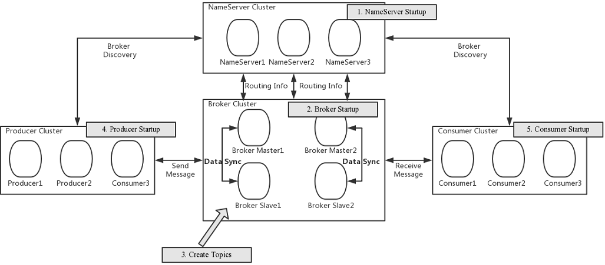
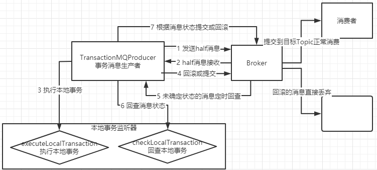

<!DOCTYPE html>
<html lang="en">
<head><meta name="generator" content="Hexo 3.9.0">
    <meta charset="utf-8">
    
    <title>
        RocketMQ基础 |
        
        YingLong</title>
    
    
        <meta name="keywords" content="RocketMQ">
    
    <meta name="viewport" content="width=device-width, initial-scale=1, maximum-scale=1">
    <meta name="description" content="RocketMQ架构 Producer消息发布的角色，支持分布式集群方式部署。Producer通过MQ的负载均衡模块选择相应的Broker集群队列进行消息投递，投递的过程支持快速失败并且低延迟。 Producer启动后会随机选择NameServer集群中其中一个节点建立长连接，定期从NameServer获取Topic路由信息，并判断当前订阅Topic存在哪些Broker上，轮询从队列列表中选择一个">
<meta name="keywords" content="RocketMQ">
<meta property="og:type" content="article">
<meta property="og:title" content="RocketMQ基础">
<meta property="og:url" content="https://yaoyinglong.github.io/Blog/Cloud/MQ/RocketMQ/RocketMQ基础/index.html">
<meta property="og:site_name" content="YingLong">
<meta property="og:description" content="RocketMQ架构 Producer消息发布的角色，支持分布式集群方式部署。Producer通过MQ的负载均衡模块选择相应的Broker集群队列进行消息投递，投递的过程支持快速失败并且低延迟。 Producer启动后会随机选择NameServer集群中其中一个节点建立长连接，定期从NameServer获取Topic路由信息，并判断当前订阅Topic存在哪些Broker上，轮询从队列列表中选择一个">
<meta property="og:locale" content="en">
<meta property="og:image" content="https://yaoyinglong.github.io/images/MQ/rocketmq_architecture_3.png">
<meta property="og:image" content="https://yaoyinglong.github.io/images/MQ/RocketMQ事务消息.png">
<meta property="og:updated_time" content="2022-01-07T14:11:58.710Z">
<meta name="twitter:card" content="summary">
<meta name="twitter:title" content="RocketMQ基础">
<meta name="twitter:description" content="RocketMQ架构 Producer消息发布的角色，支持分布式集群方式部署。Producer通过MQ的负载均衡模块选择相应的Broker集群队列进行消息投递，投递的过程支持快速失败并且低延迟。 Producer启动后会随机选择NameServer集群中其中一个节点建立长连接，定期从NameServer获取Topic路由信息，并判断当前订阅Topic存在哪些Broker上，轮询从队列列表中选择一个">
<meta name="twitter:image" content="https://yaoyinglong.github.io/images/MQ/rocketmq_architecture_3.png">
    

    

    
        <link rel="icon" href="/favicon.ico">
    

    <link rel="stylesheet" href="/libs/font-awesome/css/font-awesome.min.css">
    <link rel="stylesheet" href="/libs/open-sans/styles.css">
    <link rel="stylesheet" href="/libs/source-code-pro/styles.css">

    <link rel="stylesheet" href="/css/style.css">
    <script src="/libs/jquery/2.1.3/jquery.min.js"></script>
    <script src="/libs/jquery/plugins/cookie/1.4.1/jquery.cookie.js"></script>
    
    
        <link rel="stylesheet" href="/libs/lightgallery/css/lightgallery.min.css">
    
    
        <link rel="stylesheet" href="/libs/justified-gallery/justifiedGallery.min.css">
    
    
    
    


</head>
</html>
<body>
<div id="container">
    <header id="header">
    <div id="header-main" class="header-inner">
        <div class="outer">
            <a href="/" id="logo">
                <i class="logo"></i>
                <span class="site-title">YingLong</span>
            </a>
            <nav id="main-nav">
                
                    <a class="main-nav-link" href="/">Home</a>
                
                    <a class="main-nav-link" href="/archives">Archives</a>
                
                    <a class="main-nav-link" href="/categories">Categories</a>
                
                    <a class="main-nav-link" href="/tags">Tags</a>
                
                    <a class="main-nav-link" href="/about">About</a>
                
                <a class="main-nav-link" href="javascript:trigger()">Reading</a>
            </nav>
            
            <div id="search-form-wrap">
    
        <form class="search-form">
            <input type="text" class="ins-search-input search-form-input" placeholder="Search">
            <button type="submit" class="search-form-submit"></button>
        </form>
        <div class="ins-search">
    <div class="ins-search-mask"></div>
    <div class="ins-search-container">
        <div class="ins-input-wrapper">
            <input type="text" class="ins-search-input" placeholder="Type something...">
            <span class="ins-close ins-selectable"><i class="fa fa-times-circle"></i></span>
        </div>
        <div class="ins-section-wrapper">
            <div class="ins-section-container"></div>
        </div>
    </div>
</div>
<script>
    (function (window) {
        var INSIGHT_CONFIG = {
            TRANSLATION: {
                POSTS: 'Posts',
                PAGES: 'Pages',
                CATEGORIES: 'Categories',
                TAGS: 'Tags',
                UNTITLED: '(Untitled)',
            },
            ROOT_URL: '/',
            CONTENT_URL: '/content.json',
        };
        window.INSIGHT_CONFIG = INSIGHT_CONFIG;
    })(window);
</script>
<script src="/js/insight.js"></script>
    
</div>
        </div>
    </div>
    <div id="main-nav-mobile" class="header-sub header-inner">
        <table class="menu outer">
            <tr>
                
                    <td><a class="main-nav-link" href="/">Home</a></td>
                
                    <td><a class="main-nav-link" href="/archives">Archives</a></td>
                
                    <td><a class="main-nav-link" href="/categories">Categories</a></td>
                
                    <td><a class="main-nav-link" href="/tags">Tags</a></td>
                
                    <td><a class="main-nav-link" href="/about">About</a></td>
                
                <td>
                    
    <div class="search-form">
        <input type="text" class="ins-search-input search-form-input" placeholder="Search">
    </div>

                </td>
            </tr>
        </table>
    </div>
</header>
<script type="text/javascript">
    var index = 0
    trigger = function () {
        if (index % 2 == 0) {
            $("#sidebar").css("display", "none");
            $("#main").css("float", "none");
        } else {
            $("#sidebar").css("display", "inline");
            $("#main").css("float", "left");
        }
        index++
    }
</script>

    <div class="outer">
        
        
            <aside id="sidebar">
    
        
    <div class="widget-wrap" id="categories">
        <h3 class="widget-title">
            <span>categories</span>
            &nbsp;
            <a id="allExpand" href="#">
                <i class="fa fa-angle-double-down fa-2x"></i>
            </a>
        </h3>

        
        
        
            <ul class="unstyled" id="tree">
                
                    <li class="directory open">
                        <a href="#" data-role="directory">
                            <i class="fa fa-folder-open"></i>
                            &nbsp;
                            Cloud
                        </a>
                        
            <ul class="unstyled" id="tree">
                
                    <li class="directory">
                        <a href="#" data-role="directory">
                            <i class="fa fa-folder"></i>
                            &nbsp;
                            Dubbo
                        </a>
                        
            <ul class="unstyled" id="tree">
                
                    <li class="file"><a href="/Blog/Cloud/Dubbo/Dubbo基础/">Dubbo基础</a></li>
                
                    <li class="file"><a href="/Blog/Cloud/Dubbo/Dubbo服务调用/">Dubbo服务调用</a></li>
                
                    <li class="file"><a href="/Blog/Cloud/Dubbo/SPI机制源码/">SPI机制源码</a></li>
                
                    <li class="file"><a href="/Blog/Cloud/Dubbo/Dubbo服务引入/">Dubbo服务引入</a></li>
                
                    <li class="file"><a href="/Blog/Cloud/Dubbo/Dubbo服务导出/">Dubbo服务导出</a></li>
                
                    <li class="file"><a href="/Blog/Cloud/Dubbo/Dubbo与Spring集成原理/">Dubbo与Spring集成原理</a></li>
                
            </ul>
        
                    </li>
                
                    <li class="directory">
                        <a href="#" data-role="directory">
                            <i class="fa fa-folder"></i>
                            &nbsp;
                            ELK
                        </a>
                        
            <ul class="unstyled" id="tree">
                
                    <li class="file"><a href="/Blog/Cloud/ELK/ElasticSearch基础/">ElasticSearch基础</a></li>
                
                    <li class="file"><a href="/Blog/Cloud/ELK/ElasticSearch实战/">ElasticSearch实战</a></li>
                
                    <li class="file"><a href="/Blog/Cloud/ELK/ElasticSearch进阶/">ElasticSearch进阶</a></li>
                
            </ul>
        
                    </li>
                
                    <li class="directory open">
                        <a href="#" data-role="directory">
                            <i class="fa fa-folder-open"></i>
                            &nbsp;
                            MQ
                        </a>
                        
            <ul class="unstyled" id="tree">
                
                    <li class="directory open">
                        <a href="#" data-role="directory">
                            <i class="fa fa-folder-open"></i>
                            &nbsp;
                            RocketMQ
                        </a>
                        
            <ul class="unstyled" id="tree">
                
                    <li class="file"><a href="/Blog/Cloud/MQ/RocketMQ/NameServer&Broker启动源码/">NameServer&Broker启动源码</a></li>
                
                    <li class="file"><a href="/Blog/Cloud/MQ/RocketMQ/RocketMQ高级特性/">RocketMQ高级特性</a></li>
                
                    <li class="file active"><a href="/Blog/Cloud/MQ/RocketMQ/RocketMQ基础/">RocketMQ基础</a></li>
                
                    <li class="file"><a href="/Blog/Cloud/MQ/RocketMQ/RocketMQ消息存储源码/">RocketMQ消息存储源码</a></li>
                
                    <li class="file"><a href="/Blog/Cloud/MQ/RocketMQ/RocketMQ生产者源码/">RocketMQ生产者源码</a></li>
                
                    <li class="file"><a href="/Blog/Cloud/MQ/RocketMQ/RocketMQ消费者源码/">RocketMQ消费者源码</a></li>
                
                    <li class="file"><a href="/Blog/Cloud/MQ/RocketMQ/Consumer启动源码/">Consumer启动源码</a></li>
                
                    <li class="file"><a href="/Blog/Cloud/MQ/RocketMQ/Producer启动源码/">Producer启动源码</a></li>
                
            </ul>
        
                    </li>
                
                    <li class="file"><a href="/Blog/Cloud/MQ/Kafka基础/">Kafka基础</a></li>
                
                    <li class="file"><a href="/Blog/Cloud/MQ/RabbitMQ高级特性及Spring集成/">RabbitMQ高级特性及Spring集成</a></li>
                
                    <li class="file"><a href="/Blog/Cloud/MQ/RabbitMQ基础/">RabbitMQ基础</a></li>
                
            </ul>
        
                    </li>
                
                    <li class="directory">
                        <a href="#" data-role="directory">
                            <i class="fa fa-folder"></i>
                            &nbsp;
                            Nacos
                        </a>
                        
            <ul class="unstyled" id="tree">
                
                    <li class="file"><a href="/Blog/Cloud/Nacos/Nacos Client原理/">Nacos Client原理</a></li>
                
                    <li class="file"><a href="/Blog/Cloud/Nacos/Nacos Server原理/">Nacos Server原理</a></li>
                
                    <li class="file"><a href="/Blog/Cloud/Nacos/Nacos问题总结/">Nacos问题总结</a></li>
                
                    <li class="file"><a href="/Blog/Cloud/Nacos/Nacos集群CP模式/">Nacos集群CP模式</a></li>
                
                    <li class="file"><a href="/Blog/Cloud/Nacos/Nacos配置中心Server原理/">Nacos配置中心Server原理</a></li>
                
                    <li class="file"><a href="/Blog/Cloud/Nacos/Nacos集群成员信息同步/">Nacos集群成员信息同步</a></li>
                
                    <li class="file"><a href="/Blog/Cloud/Nacos/Nacos集群注册服务同步/">Nacos集群注册服务同步</a></li>
                
                    <li class="file"><a href="/Blog/Cloud/Nacos/Nacos配置中心Client原理/">Nacos配置中心Client原理</a></li>
                
            </ul>
        
                    </li>
                
                    <li class="directory">
                        <a href="#" data-role="directory">
                            <i class="fa fa-folder"></i>
                            &nbsp;
                            Netty
                        </a>
                        
            <ul class="unstyled" id="tree">
                
                    <li class="file"><a href="/Blog/Cloud/Netty/IO模型基础/">IO模型基础</a></li>
                
                    <li class="file"><a href="/Blog/Cloud/Netty/Netty基础/">Netty基础</a></li>
                
                    <li class="file"><a href="/Blog/Cloud/Netty/Netty源码/">Netty源码</a></li>
                
                    <li class="file"><a href="/Blog/Cloud/Netty/Netty进阶/">Netty进阶</a></li>
                
            </ul>
        
                    </li>
                
                    <li class="directory">
                        <a href="#" data-role="directory">
                            <i class="fa fa-folder"></i>
                            &nbsp;
                            Redis
                        </a>
                        
            <ul class="unstyled" id="tree">
                
                    <li class="file"><a href="/Blog/Cloud/Redis/Redis分布式锁实现/">Redis分布式锁实现</a></li>
                
                    <li class="file"><a href="/Blog/Cloud/Redis/Redis缓存及性能优化/">Redis缓存及性能优化</a></li>
                
                    <li class="file"><a href="/Blog/Cloud/Redis/Redis基础/">Redis基础</a></li>
                
                    <li class="file"><a href="/Blog/Cloud/Redis/Redis集群架构/">Redis集群架构</a></li>
                
            </ul>
        
                    </li>
                
                    <li class="directory">
                        <a href="#" data-role="directory">
                            <i class="fa fa-folder"></i>
                            &nbsp;
                            Seata
                        </a>
                        
            <ul class="unstyled" id="tree">
                
                    <li class="file"><a href="/Blog/Cloud/Seata/Seata集成原理/">Seata集成原理</a></li>
                
                    <li class="file"><a href="/Blog/Cloud/Seata/Seata分布式事务原理/">Seata分布式事务原理</a></li>
                
            </ul>
        
                    </li>
                
                    <li class="directory">
                        <a href="#" data-role="directory">
                            <i class="fa fa-folder"></i>
                            &nbsp;
                            Sentinel
                        </a>
                        
            <ul class="unstyled" id="tree">
                
                    <li class="file"><a href="/Blog/Cloud/Sentinel/Sentinel配置持久化/">Sentinel配置持久化</a></li>
                
                    <li class="file"><a href="/Blog/Cloud/Sentinel/Sentinel规则发布源码/">Sentinel规则发布源码</a></li>
                
                    <li class="file"><a href="/Blog/Cloud/Sentinel/常见限流算法/">常见限流算法</a></li>
                
                    <li class="file"><a href="/Blog/Cloud/Sentinel/Sentinel限流熔断降级源码/">Sentinel限流熔断降级源码</a></li>
                
            </ul>
        
                    </li>
                
                    <li class="directory">
                        <a href="#" data-role="directory">
                            <i class="fa fa-folder"></i>
                            &nbsp;
                            Zookeeper
                        </a>
                        
            <ul class="unstyled" id="tree">
                
                    <li class="file"><a href="/Blog/Cloud/Zookeeper/Zookeeper基础/">Zookeeper基础</a></li>
                
                    <li class="file"><a href="/Blog/Cloud/Zookeeper/Zookeeper客户端之ZAB/">Zookeeper客户端之ZAB</a></li>
                
                    <li class="file"><a href="/Blog/Cloud/Zookeeper/Zookeeper集群Leader选举/">Zookeeper集群Leader选举</a></li>
                
                    <li class="file"><a href="/Blog/Cloud/Zookeeper/Zookeeper服务端之ZAB/">Zookeeper服务端之ZAB</a></li>
                
            </ul>
        
                    </li>
                
                    <li class="directory">
                        <a href="#" data-role="directory">
                            <i class="fa fa-folder"></i>
                            &nbsp;
                            网关
                        </a>
                        
            <ul class="unstyled" id="tree">
                
                    <li class="file"><a href="/Blog/Cloud/网关/Gateway源码/">Gateway源码</a></li>
                
            </ul>
        
                    </li>
                
                    <li class="file"><a href="/Blog/Cloud/Feign集成原理/">Feign集成原理</a></li>
                
                    <li class="file"><a href="/Blog/Cloud/Canal基础/">Canal基础</a></li>
                
                    <li class="file"><a href="/Blog/Cloud/Ribbon集成原理/">Ribbon集成原理</a></li>
                
                    <li class="file"><a href="/Blog/Cloud/分布式事务解决方案/">分布式事务解决方案</a></li>
                
                    <li class="file"><a href="/Blog/Cloud/分布式系统常见问题/">分布式系统常见问题</a></li>
                
                    <li class="file"><a href="/Blog/Cloud/秒杀问题及解决方案/">秒杀问题及解决方案</a></li>
                
            </ul>
        
                    </li>
                
                    <li class="directory">
                        <a href="#" data-role="directory">
                            <i class="fa fa-folder"></i>
                            &nbsp;
                            DB
                        </a>
                        
            <ul class="unstyled" id="tree">
                
                    <li class="file"><a href="/Blog/DB/Explain工具/">Explain工具</a></li>
                
                    <li class="file"><a href="/Blog/DB/MongoDB基础/">MongoDB基础</a></li>
                
                    <li class="file"><a href="/Blog/DB/MVCC与BufferPool缓存机制/">MVCC与BufferPool缓存机制</a></li>
                
                    <li class="file"><a href="/Blog/DB/MySQL主从架构/">MySQL主从架构</a></li>
                
                    <li class="file"><a href="/Blog/DB/MySQL事务隔离级别与锁机制/">MySQL事务隔离级别与锁机制</a></li>
                
                    <li class="file"><a href="/Blog/DB/MySQL内部组件结构/">MySQL内部组件结构</a></li>
                
                    <li class="file"><a href="/Blog/DB/MySQL基础/">MySQL基础</a></li>
                
                    <li class="file"><a href="/Blog/DB/MySQL常用SQL总结/">MySQL常用SQL总结</a></li>
                
                    <li class="file"><a href="/Blog/DB/ShardingSphere基础/">ShardingSphere基础</a></li>
                
                    <li class="file"><a href="/Blog/DB/分库分表/">分库分表</a></li>
                
                    <li class="file"><a href="/Blog/DB/索引优化一/">索引优化一</a></li>
                
                    <li class="file"><a href="/Blog/DB/索引优化三/">索引优化三</a></li>
                
                    <li class="file"><a href="/Blog/DB/索引优化二/">索引优化二</a></li>
                
                    <li class="file"><a href="/Blog/DB/索引的原理与使用/">索引的原理与使用</a></li>
                
            </ul>
        
                    </li>
                
                    <li class="directory">
                        <a href="#" data-role="directory">
                            <i class="fa fa-folder"></i>
                            &nbsp;
                            Java
                        </a>
                        
            <ul class="unstyled" id="tree">
                
                    <li class="directory">
                        <a href="#" data-role="directory">
                            <i class="fa fa-folder"></i>
                            &nbsp;
                            VM
                        </a>
                        
            <ul class="unstyled" id="tree">
                
                    <li class="file"><a href="/Blog/Java/VM/JVM内存池/">JVM内存池</a></li>
                
                    <li class="file"><a href="/Blog/Java/VM/Minor&Major&Full GC/">Minor&Major&Full GC</a></li>
                
                    <li class="file"><a href="/Blog/Java/VM/Class文件结构/">Class文件结构</a></li>
                
                    <li class="file"><a href="/Blog/Java/VM/Java内存区域/">Java内存区域</a></li>
                
                    <li class="file"><a href="/Blog/Java/VM/OutOfMemoryError异常/">OOM异常实验</a></li>
                
                    <li class="file"><a href="/Blog/Java/VM/内存非配与回收策略/">内存分配与回收策略</a></li>
                
                    <li class="file"><a href="/Blog/Java/VM/垃圾收集器/">垃圾收集器</a></li>
                
                    <li class="file"><a href="/Blog/Java/VM/堆中对象分配&布局&访问/">堆中对象分配&布局&访问</a></li>
                
                    <li class="file"><a href="/Blog/Java/VM/垃圾收集算法/">垃圾收集算法及实现</a></li>
                
                    <li class="file"><a href="/Blog/Java/VM/字节码指令/">字节码指令</a></li>
                
                    <li class="file"><a href="/Blog/Java/VM/字节码指令手册/">字节码指令手册</a></li>
                
                    <li class="file"><a href="/Blog/Java/VM/对象是否存活/">对象是否存活</a></li>
                
                    <li class="file"><a href="/Blog/Java/VM/方法调用/">方法调用</a></li>
                
                    <li class="file"><a href="/Blog/Java/VM/属性表集合/">属性表集合</a></li>
                
                    <li class="file"><a href="/Blog/Java/VM/常量池/">常量池</a></li>
                
                    <li class="file"><a href="/Blog/Java/VM/理解GC日志/">理解GC日志</a></li>
                
                    <li class="file"><a href="/Blog/Java/VM/类加载器/">类加载器</a></li>
                
                    <li class="file"><a href="/Blog/Java/VM/运行时栈帧结构/">运行时栈帧结构</a></li>
                
                    <li class="file"><a href="/Blog/Java/VM/类加载过程/">类加载过程</a></li>
                
            </ul>
        
                    </li>
                
                    <li class="directory">
                        <a href="#" data-role="directory">
                            <i class="fa fa-folder"></i>
                            &nbsp;
                            基础
                        </a>
                        
            <ul class="unstyled" id="tree">
                
                    <li class="file"><a href="/Blog/Java/基础/HashMap源码分析JDK8/">HashMap源码分析JDK8</a></li>
                
                    <li class="file"><a href="/Blog/Java/基础/Java实用工具库/">Java实用工具库</a></li>
                
                    <li class="file"><a href="/Blog/Java/基础/HashMap源码分析JDK7/">HashMap源码分析JDK7</a></li>
                
                    <li class="file"><a href="/Blog/Java/基础/lambda常用总结/">lambda常用总结</a></li>
                
                    <li class="file"><a href="/Blog/Java/基础/位运算/">位运算</a></li>
                
                    <li class="file"><a href="/Blog/Java/基础/PriorityQueue源码/">PriorityQueue源码</a></li>
                
                    <li class="file"><a href="/Blog/Java/基础/动态代理/">动态代理</a></li>
                
                    <li class="file"><a href="/Blog/Java/基础/反射基础/">反射基础</a></li>
                
                    <li class="file"><a href="/Blog/Java/基础/时间及日期总结/">Java8时间及日期</a></li>
                
                    <li class="file"><a href="/Blog/Java/基础/注解实现及应用/">注解实现及应用</a></li>
                
            </ul>
        
                    </li>
                
                    <li class="directory">
                        <a href="#" data-role="directory">
                            <i class="fa fa-folder"></i>
                            &nbsp;
                            工具
                        </a>
                        
            <ul class="unstyled" id="tree">
                
                    <li class="file"><a href="/Blog/Java/工具/Java中调用Groovy脚本/">Java中调用Groovy脚本</a></li>
                
                    <li class="file"><a href="/Blog/Java/工具/JAVA实用工具/">JAVA实用工具</a></li>
                
                    <li class="file"><a href="/Blog/Java/工具/国密SM2/">国密SM2</a></li>
                
                    <li class="file"><a href="/Blog/Java/工具/国密SM4/">国密SM4</a></li>
                
            </ul>
        
                    </li>
                
                    <li class="directory">
                        <a href="#" data-role="directory">
                            <i class="fa fa-folder"></i>
                            &nbsp;
                            并发
                        </a>
                        
            <ul class="unstyled" id="tree">
                
                    <li class="file"><a href="/Blog/Java/并发/BlockingQueue阻塞队列二/">BlockingQueue阻塞队列二</a></li>
                
                    <li class="file"><a href="/Blog/Java/并发/AQS与ReentrantLock/">AQS与ReentrantLock</a></li>
                
                    <li class="file"><a href="/Blog/Java/并发/Callable与Future/">Callable与Future</a></li>
                
                    <li class="file"><a href="/Blog/Java/并发/ConcurrentHashMap源码JDK7/">ConcurrentHashMap源码JDK7</a></li>
                
                    <li class="file"><a href="/Blog/Java/并发/Condition原理/">Condition原理</a></li>
                
                    <li class="file"><a href="/Blog/Java/并发/Java内存模型/">Java内存模型</a></li>
                
                    <li class="file"><a href="/Blog/Java/并发/ConcurrentHashMap源码JDK8/">ConcurrentHashMap源码JDK8</a></li>
                
                    <li class="file"><a href="/Blog/Java/并发/Java与线程/">Java与线程</a></li>
                
                    <li class="file"><a href="/Blog/Java/并发/BlockingQueue阻塞队列一/">BlockingQueue阻塞队列一</a></li>
                
                    <li class="file"><a href="/Blog/Java/并发/ReentrantReadWriteLock原理/">ReentrantReadWriteLock原理</a></li>
                
                    <li class="file"><a href="/Blog/Java/并发/ScheduledThreadPoolExecutor/">ScheduledThreadPoolExecutor</a></li>
                
                    <li class="file"><a href="/Blog/Java/并发/Synchronized总结/">Synchronized总结</a></li>
                
                    <li class="file"><a href="/Blog/Java/并发/ThreadLocal原理/">ThreadLocal原理</a></li>
                
                    <li class="file"><a href="/Blog/Java/并发/原子性、可见性、有序性/">原子性、可见性、有序性</a></li>
                
                    <li class="file"><a href="/Blog/Java/并发/Unsafe应用/">Unsafe应用</a></li>
                
                    <li class="file"><a href="/Blog/Java/并发/Volatile原理/">Volatile原理</a></li>
                
                    <li class="file"><a href="/Blog/Java/并发/线程安全/">线程安全</a></li>
                
                    <li class="file"><a href="/Blog/Java/并发/线程安全实现方式/">线程安全实现方式</a></li>
                
                    <li class="file"><a href="/Blog/Java/并发/同步工具类/">同步工具类</a></li>
                
                    <li class="file"><a href="/Blog/Java/并发/锁优化/">锁优化</a></li>
                
                    <li class="file"><a href="/Blog/Java/并发/线程池原理/">线程池原理</a></li>
                
                    <li class="file"><a href="/Blog/Java/并发/操作系统底层/">操作系统底层</a></li>
                
            </ul>
        
                    </li>
                
                    <li class="file"><a href="/Blog/Java/JVM内存参数设置/">JVM内存参数设置</a></li>
                
                    <li class="file"><a href="/Blog/Java/JVM调优工具/">JVM调优工具</a></li>
                
                    <li class="file"><a href="/Blog/Java/JVM整体概览/">JVM整体概览</a></li>
                
                    <li class="file"><a href="/Blog/Java/JVM调优思路/">JVM调优思路</a></li>
                
            </ul>
        
                    </li>
                
                    <li class="directory">
                        <a href="#" data-role="directory">
                            <i class="fa fa-folder"></i>
                            &nbsp;
                            Maven
                        </a>
                        
            <ul class="unstyled" id="tree">
                
                    <li class="file"><a href="/Blog/Maven/Maven仓库/">Maven仓库</a></li>
                
                    <li class="file"><a href="/Blog/Maven/Maven Assembly标签全解/">Maven Assembly标签全解</a></li>
                
                    <li class="file"><a href="/Blog/Maven/Maven基础/">Maven基础</a></li>
                
                    <li class="file"><a href="/Blog/Maven/Maven加密JAR包/">Maven加密JAR包</a></li>
                
                    <li class="file"><a href="/Blog/Maven/Maven个性化打包/">Maven个性化打包</a></li>
                
                    <li class="file"><a href="/Blog/Maven/Maven属性/">Maven属性</a></li>
                
                    <li class="file"><a href="/Blog/Maven/Maven常用/">Maven常用</a></li>
                
                    <li class="file"><a href="/Blog/Maven/Maven常用工具/">Maven常用工具</a></li>
                
                    <li class="file"><a href="/Blog/Maven/Maven常见问题总结/">Maven常见问题总结</a></li>
                
                    <li class="file"><a href="/Blog/Maven/Maven常用插件/">Maven常用插件</a></li>
                
                    <li class="file"><a href="/Blog/Maven/Maven插件基础/">Maven插件基础</a></li>
                
                    <li class="file"><a href="/Blog/Maven/Maven插件编写/">Maven插件编写</a></li>
                
                    <li class="file"><a href="/Blog/Maven/Maven标签全解/">Maven标签全解</a></li>
                
                    <li class="file"><a href="/Blog/Maven/Maven生命周期/">Maven生命周期</a></li>
                
                    <li class="file"><a href="/Blog/Maven/Maven聚合与继承/">Maven聚合与继承</a></li>
                
            </ul>
        
                    </li>
                
                    <li class="directory">
                        <a href="#" data-role="directory">
                            <i class="fa fa-folder"></i>
                            &nbsp;
                            Spring
                        </a>
                        
            <ul class="unstyled" id="tree">
                
                    <li class="directory">
                        <a href="#" data-role="directory">
                            <i class="fa fa-folder"></i>
                            &nbsp;
                            SpringBoot
                        </a>
                        
            <ul class="unstyled" id="tree">
                
                    <li class="file"><a href="/Blog/Spring/SpringBoot/SpringBoot Jar包启动原理/">SpringBoot Jar包启动原理</a></li>
                
                    <li class="file"><a href="/Blog/Spring/SpringBoot/SpringBoot资源加载/">SpringBoot资源加载</a></li>
                
                    <li class="file"><a href="/Blog/Spring/SpringBoot/SpringBoot自动装配原理/">SpringBoot自动装配原理</a></li>
                
                    <li class="file"><a href="/Blog/Spring/SpringBoot/SpringBoot启动原理/">SpringBoot启动原理</a></li>
                
            </ul>
        
                    </li>
                
                    <li class="file"><a href="/Blog/Spring/AOP切面类解析/">AOP切面类解析</a></li>
                
                    <li class="file"><a href="/Blog/Spring/AOP创建代理与调用/">AOP创建代理与调用</a></li>
                
                    <li class="file"><a href="/Blog/Spring/BeanDefinition解析注册/">BeanDefinition解析注册</a></li>
                
                    <li class="file"><a href="/Blog/Spring/Bean的生命周期/">Bean的生命周期</a></li>
                
                    <li class="file"><a href="/Blog/Spring/Hystrix总结/">Hystrix总结</a></li>
                
                    <li class="file"><a href="/Blog/Spring/Bean的加载过程/">Bean的加载过程</a></li>
                
                    <li class="file"><a href="/Blog/Spring/IoC容器/">IoC容器</a></li>
                
                    <li class="file"><a href="/Blog/Spring/Spring Gzip压缩/">Spring Gzip压缩</a></li>
                
                    <li class="file"><a href="/Blog/Spring/IoC容器加载过程/">IoC容器加载过程</a></li>
                
                    <li class="file"><a href="/Blog/Spring/SpringMvc异步/">SpringMvc异步原理及实现</a></li>
                
                    <li class="file"><a href="/Blog/Spring/SpringMvc加载机制/">SpringMvc加载机制</a></li>
                
                    <li class="file"><a href="/Blog/Spring/Spring初始化扩展/">Spring初始化扩展</a></li>
                
                    <li class="file"><a href="/Blog/Spring/Spring整体架构/">Spring整体架构</a></li>
                
                    <li class="file"><a href="/Blog/Spring/SpringMvc处理分发请求原理/">SpringMvc处理分发请求原理</a></li>
                
                    <li class="file"><a href="/Blog/Spring/Spring线程池跨线程数据共享/">Spring线程池跨线程数据共享</a></li>
                
                    <li class="file"><a href="/Blog/Spring/事件监听器/">事件监听器</a></li>
                
                    <li class="file"><a href="/Blog/Spring/事务解析原理/">事务解析原理</a></li>
                
                    <li class="file"><a href="/Blog/Spring/事务调用原理/">事务调用原理</a></li>
                
            </ul>
        
                    </li>
                
                    <li class="directory">
                        <a href="#" data-role="directory">
                            <i class="fa fa-folder"></i>
                            &nbsp;
                            Test
                        </a>
                        
            <ul class="unstyled" id="tree">
                
                    <li class="file"><a href="/Blog/Test/IT测试总结/">IT测试总结</a></li>
                
                    <li class="file"><a href="/Blog/Test/UT测试总结/">UT测试总结</a></li>
                
                    <li class="file"><a href="/Blog/Test/JMeter日常总结/">JMeter日常总结</a></li>
                
                    <li class="file"><a href="/Blog/Test/LoadRunner日常总结/">LoadRunner日常总结</a></li>
                
            </ul>
        
                    </li>
                
                    <li class="directory">
                        <a href="#" data-role="directory">
                            <i class="fa fa-folder"></i>
                            &nbsp;
                            中间件
                        </a>
                        
            <ul class="unstyled" id="tree">
                
                    <li class="directory">
                        <a href="#" data-role="directory">
                            <i class="fa fa-folder"></i>
                            &nbsp;
                            Mybatis
                        </a>
                        
            <ul class="unstyled" id="tree">
                
                    <li class="file"><a href="/Blog/中间件/Mybatis/Mybatis缓存原理/">Mybatis缓存原理</a></li>
                
                    <li class="file"><a href="/Blog/中间件/Mybatis/Mybatis执行SQL原理/">Mybatis执行SQL原理</a></li>
                
                    <li class="file"><a href="/Blog/中间件/Mybatis/Mybatis集成到Spring原理/">Mybatis集成到Spring原理</a></li>
                
                    <li class="file"><a href="/Blog/中间件/Mybatis/Mybatis配置文件解析原理/">Mybatis配置文件解析原理</a></li>
                
            </ul>
        
                    </li>
                
                    <li class="directory">
                        <a href="#" data-role="directory">
                            <i class="fa fa-folder"></i>
                            &nbsp;
                            Tomcat
                        </a>
                        
            <ul class="unstyled" id="tree">
                
                    <li class="file"><a href="/Blog/中间件/Tomcat/BIO和NIO底层原理对比/">BIO和NIO底层原理对比</a></li>
                
                    <li class="file"><a href="/Blog/中间件/Tomcat/Tomcat处理响应过程/">Tomcat处理响应过程</a></li>
                
                    <li class="file"><a href="/Blog/中间件/Tomcat/Tomcat启动过程/">Tomcat启动过程</a></li>
                
                    <li class="file"><a href="/Blog/中间件/Tomcat/Tomcat处理请求过程/">Tomcat处理请求过程</a></li>
                
                    <li class="file"><a href="/Blog/中间件/Tomcat/Tomcat工作原理/">Tomcat工作原理</a></li>
                
                    <li class="file"><a href="/Blog/中间件/Tomcat/Tomcat热部署热加载/">Tomcat热部署热加载</a></li>
                
                    <li class="file"><a href="/Blog/中间件/Tomcat/Tomcat整体架构/">Tomcat整体架构</a></li>
                
            </ul>
        
                    </li>
                
            </ul>
        
                    </li>
                
                    <li class="directory">
                        <a href="#" data-role="directory">
                            <i class="fa fa-folder"></i>
                            &nbsp;
                            云原生
                        </a>
                        
            <ul class="unstyled" id="tree">
                
                    <li class="file"><a href="/Blog/云原生/Docker基础/">Docker基础</a></li>
                
                    <li class="file"><a href="/Blog/云原生/Docker Compose基础/">Docker Compose基础</a></li>
                
                    <li class="file"><a href="/Blog/云原生/Docker搭建Prometheus&Grafana/">Docker搭建Prometheus&Grafana</a></li>
                
                    <li class="file"><a href="/Blog/云原生/Kubernetes基础/">Kubernetes基础</a></li>
                
            </ul>
        
                    </li>
                
                    <li class="directory">
                        <a href="#" data-role="directory">
                            <i class="fa fa-folder"></i>
                            &nbsp;
                            杂记
                        </a>
                        
            <ul class="unstyled" id="tree">
                
                    <li class="directory">
                        <a href="#" data-role="directory">
                            <i class="fa fa-folder"></i>
                            &nbsp;
                            Git
                        </a>
                        
            <ul class="unstyled" id="tree">
                
                    <li class="file"><a href="/Blog/杂记/Git/GIt基本概念/">Git基本概念</a></li>
                
                    <li class="file"><a href="/Blog/杂记/Git/GIt常用命令/">Git常用命令</a></li>
                
                    <li class="file"><a href="/Blog/杂记/Git/分支管理理解/">分支管理理解</a></li>
                
            </ul>
        
                    </li>
                
                    <li class="directory">
                        <a href="#" data-role="directory">
                            <i class="fa fa-folder"></i>
                            &nbsp;
                            Linux
                        </a>
                        
            <ul class="unstyled" id="tree">
                
                    <li class="file"><a href="/Blog/杂记/Linux/Linux常用命令/">Linux常用命令</a></li>
                
                    <li class="file"><a href="/Blog/杂记/Linux/Linux基础/">Linux基础</a></li>
                
                    <li class="file"><a href="/Blog/杂记/Linux/Shell基础/">Shell基础</a></li>
                
                    <li class="file"><a href="/Blog/杂记/Linux/Linux磁盘与文件系统/">Linux磁盘与文件系统</a></li>
                
                    <li class="file"><a href="/Blog/杂记/Linux/零拷贝技术/">零拷贝技术</a></li>
                
            </ul>
        
                    </li>
                
                    <li class="directory">
                        <a href="#" data-role="directory">
                            <i class="fa fa-folder"></i>
                            &nbsp;
                            协议族
                        </a>
                        
            <ul class="unstyled" id="tree">
                
                    <li class="file"><a href="/Blog/杂记/协议族/TCPIP四层&五层模型/">TCP/IP四层&五层模型</a></li>
                
                    <li class="file"><a href="/Blog/杂记/协议族/以太网/">以太网</a></li>
                
                    <li class="file"><a href="/Blog/杂记/协议族/网络基础知识/">网络基础知识</a></li>
                
                    <li class="file"><a href="/Blog/杂记/协议族/地址解析协议/">地址解析协议ARP</a></li>
                
                    <li class="file"><a href="/Blog/杂记/协议族/TCP&UDP协议/">TCP&UDP协议</a></li>
                
                    <li class="file"><a href="/Blog/杂记/协议族/HTTP协议/">HTTP协议</a></li>
                
                    <li class="file"><a href="/Blog/杂记/协议族/HTTPs协议/">HTTPs协议</a></li>
                
            </ul>
        
                    </li>
                
                    <li class="directory">
                        <a href="#" data-role="directory">
                            <i class="fa fa-folder"></i>
                            &nbsp;
                            工具
                        </a>
                        
            <ul class="unstyled" id="tree">
                
                    <li class="file"><a href="/Blog/杂记/工具/SonarQube配置总结/">SonarQube配置总结</a></li>
                
                    <li class="file"><a href="/Blog/杂记/工具/IDEA快捷的使用/">IDEA的快捷使用</a></li>
                
                    <li class="file"><a href="/Blog/杂记/工具/Win实用工具/">Win实用工具</a></li>
                
                    <li class="file"><a href="/Blog/杂记/工具/XSD使用总结/">XSD实用总结</a></li>
                
            </ul>
        
                    </li>
                
            </ul>
        
                    </li>
                
                    <li class="directory">
                        <a href="#" data-role="directory">
                            <i class="fa fa-folder"></i>
                            &nbsp;
                            算法
                        </a>
                        
            <ul class="unstyled" id="tree">
                
                    <li class="file"><a href="/Blog/算法/二叉搜索树/">二叉搜索树</a></li>
                
                    <li class="file"><a href="/Blog/算法/图基础/">图基础</a></li>
                
                    <li class="file"><a href="/Blog/算法/基础算法/">基础算法</a></li>
                
                    <li class="file"><a href="/Blog/算法/平衡二叉树/">平衡二叉树</a></li>
                
                    <li class="file"><a href="/Blog/算法/排序算法/">排序算法</a></li>
                
                    <li class="file"><a href="/Blog/算法/树基础/">树基础</a></li>
                
                    <li class="file"><a href="/Blog/算法/经典算法-动态规划/">经典算法-动态规划</a></li>
                
                    <li class="file"><a href="/Blog/算法/经典算法-栈/">经典算法-栈</a></li>
                
                    <li class="file"><a href="/Blog/算法/经典算法-链表/">经典算法-链表</a></li>
                
                    <li class="file"><a href="/Blog/算法/经典算法/">经典算法</a></li>
                
            </ul>
        
                    </li>
                
                    <li class="directory">
                        <a href="#" data-role="directory">
                            <i class="fa fa-folder"></i>
                            &nbsp;
                            设计模式
                        </a>
                        
            <ul class="unstyled" id="tree">
                
                    <li class="directory">
                        <a href="#" data-role="directory">
                            <i class="fa fa-folder"></i>
                            &nbsp;
                            创建型模式
                        </a>
                        
            <ul class="unstyled" id="tree">
                
                    <li class="file"><a href="/Blog/设计模式/创建型模式/单例模式/">单例模式</a></li>
                
                    <li class="file"><a href="/Blog/设计模式/创建型模式/原型模式/">原型模式</a></li>
                
                    <li class="file"><a href="/Blog/设计模式/创建型模式/工厂模式/">工厂模式</a></li>
                
                    <li class="file"><a href="/Blog/设计模式/创建型模式/建造者模式/">建造者模式</a></li>
                
            </ul>
        
                    </li>
                
                    <li class="directory">
                        <a href="#" data-role="directory">
                            <i class="fa fa-folder"></i>
                            &nbsp;
                            结构型模式
                        </a>
                        
            <ul class="unstyled" id="tree">
                
                    <li class="file"><a href="/Blog/设计模式/结构型模式/外观模式/">外观模式</a></li>
                
                    <li class="file"><a href="/Blog/设计模式/结构型模式/代理模式/">代理模式</a></li>
                
                    <li class="file"><a href="/Blog/设计模式/结构型模式/组合模式/">组合模式</a></li>
                
                    <li class="file"><a href="/Blog/设计模式/结构型模式/装饰模式/">装饰模式</a></li>
                
                    <li class="file"><a href="/Blog/设计模式/结构型模式/适配器模式/">适配器模式</a></li>
                
                    <li class="file"><a href="/Blog/设计模式/结构型模式/享元模式/">享元模式</a></li>
                
                    <li class="file"><a href="/Blog/设计模式/结构型模式/桥梁模式/">桥梁模式</a></li>
                
            </ul>
        
                    </li>
                
                    <li class="directory">
                        <a href="#" data-role="directory">
                            <i class="fa fa-folder"></i>
                            &nbsp;
                            行为型模式
                        </a>
                        
            <ul class="unstyled" id="tree">
                
                    <li class="file"><a href="/Blog/设计模式/行为型模式/命令模式/">命令模式</a></li>
                
                    <li class="file"><a href="/Blog/设计模式/行为型模式/备忘录模式/">备忘录模式</a></li>
                
                    <li class="file"><a href="/Blog/设计模式/行为型模式/模板方法模式/">模板方法模式</a></li>
                
                    <li class="file"><a href="/Blog/设计模式/行为型模式/状态模式/">状态模式</a></li>
                
                    <li class="file"><a href="/Blog/设计模式/行为型模式/中介者模式/">中介者模式</a></li>
                
                    <li class="file"><a href="/Blog/设计模式/行为型模式/策略模式/">策略模式</a></li>
                
                    <li class="file"><a href="/Blog/设计模式/行为型模式/观察者模式/">观察者模式</a></li>
                
                    <li class="file"><a href="/Blog/设计模式/行为型模式/责任链模式/">责任链模式</a></li>
                
                    <li class="file"><a href="/Blog/设计模式/行为型模式/迭代器模式/">迭代器模式</a></li>
                
                    <li class="file"><a href="/Blog/设计模式/行为型模式/访问者模式/">访问者模式</a></li>
                
                    <li class="file"><a href="/Blog/设计模式/行为型模式/解释器模式/">解释器模式</a></li>
                
            </ul>
        
                    </li>
                
                    <li class="file"><a href="/Blog/设计模式/SOLID基本原则/">SOLID基本原则</a></li>
                
                    <li class="file"><a href="/Blog/设计模式/设计模式概览/">设计模式概览</a></li>
                
                    <li class="file"><a href="/Blog/设计模式/设计模式对比/">设计模式对比</a></li>
                
            </ul>
        
                    </li>
                
                    <li class="directory">
                        <a href="#" data-role="directory">
                            <i class="fa fa-folder"></i>
                            &nbsp;
                            语言
                        </a>
                        
            <ul class="unstyled" id="tree">
                
                    <li class="directory">
                        <a href="#" data-role="directory">
                            <i class="fa fa-folder"></i>
                            &nbsp;
                            CPP
                        </a>
                        
            <ul class="unstyled" id="tree">
                
                    <li class="file"><a href="/Blog/语言/CPP/IO流/">IO流</a></li>
                
            </ul>
        
                    </li>
                
                    <li class="directory">
                        <a href="#" data-role="directory">
                            <i class="fa fa-folder"></i>
                            &nbsp;
                            Go
                        </a>
                        
            <ul class="unstyled" id="tree">
                
                    <li class="file"><a href="/Blog/语言/Go/Go基础/">Go基础</a></li>
                
            </ul>
        
                    </li>
                
                    <li class="directory">
                        <a href="#" data-role="directory">
                            <i class="fa fa-folder"></i>
                            &nbsp;
                            Python
                        </a>
                        
            <ul class="unstyled" id="tree">
                
                    <li class="file"><a href="/Blog/语言/Python/Excel文件数据抽取/">Excel文件数据抽取</a></li>
                
            </ul>
        
                    </li>
                
            </ul>
        
                    </li>
                
                    <li class="file"><a href="/Blog/index/"></a></li>
                
            </ul>
        
    </div>
    <script>
        $(document).ready(function () {
            var iconFolderOpenClass = 'fa-folder-open';
            var iconFolderCloseClass = 'fa-folder';
            var iconAllExpandClass = 'fa-angle-double-down';
            var iconAllPackClass = 'fa-angle-double-up';
            // Handle directory-tree expansion:
            // 左键单独展开目录
            $(document).on('click', '#categories a[data-role="directory"]', function (event) {
                event.preventDefault();

                var icon = $(this).children('.fa');
                var expanded = icon.hasClass(iconFolderOpenClass);
                var subtree = $(this).siblings('ul');
                icon.removeClass(iconFolderOpenClass).removeClass(iconFolderCloseClass);
                if (expanded) {
                    if (typeof subtree != 'undefined') {
                        subtree.slideUp({duration: 100});
                    }
                    icon.addClass(iconFolderCloseClass);
                } else {
                    if (typeof subtree != 'undefined') {
                        subtree.slideDown({duration: 100});
                    }
                    icon.addClass(iconFolderOpenClass);
                }
            });
            // 右键展开下属所有目录
            $('#categories a[data-role="directory"]').bind("contextmenu", function (event) {
                event.preventDefault();

                var icon = $(this).children('.fa');
                var expanded = icon.hasClass(iconFolderOpenClass);
                var listNode = $(this).siblings('ul');
                var subtrees = $.merge(listNode.find('li ul'), listNode);
                var icons = $.merge(listNode.find('.fa'), icon);
                icons.removeClass(iconFolderOpenClass).removeClass(iconFolderCloseClass);
                if (expanded) {
                    subtrees.slideUp({duration: 100});
                    icons.addClass(iconFolderCloseClass);
                } else {
                    subtrees.slideDown({duration: 100});
                    icons.addClass(iconFolderOpenClass);
                }
            })
            // 展开关闭所有目录按钮
            $(document).on('click', '#allExpand', function (event) {
                event.preventDefault();

                var icon = $(this).children('.fa');
                var expanded = icon.hasClass(iconAllExpandClass);
                icon.removeClass(iconAllExpandClass).removeClass(iconAllPackClass);
                if (expanded) {
                    $('#sidebar .fa.fa-folder').removeClass('fa-folder').addClass('fa-folder-open')
                    $('#categories li ul').slideDown({duration: 100});
                    icon.addClass(iconAllPackClass);
                } else {
                    $('#sidebar .fa.fa-folder-open').removeClass('fa-folder-open').addClass('fa-folder')
                    $('#categories li ul').slideUp({duration: 100});
                    icon.addClass(iconAllExpandClass);
                }
            });
        });
    </script>

    
</aside>
<div id="toTop" class="fa fa-angle-up"></div>

        
        <section id="main"><article id="post-Cloud/MQ/RocketMQ/RocketMQ基础" class="article article-type-post" itemscope itemprop="blogPost">
    <div class="article-inner">
        
        
            <header class="article-header">
                
                    <div class="article-meta">
                        
    <div class="article-category">
        <i class="fa fa-folder"></i>
        <a class="article-category-link" href="/categories/Cloud/">Cloud</a><i class="fa fa-angle-right"></i><a class="article-category-link" href="/categories/Cloud/MQ/">MQ</a><i class="fa fa-angle-right"></i><a class="article-category-link" href="/categories/Cloud/MQ/RocketMQ/">RocketMQ</a>
    </div>

                        
    <div class="article-tag">
        <i class="fa fa-tag"></i>
        <a class="tag-link" href="/tags/RocketMQ/">RocketMQ</a>
    </div>

                        
    <div class="article-date">
        <i class="fa fa-calendar"></i>
        <a href="/Blog/Cloud/MQ/RocketMQ/RocketMQ基础/">
            <time datetime="2021-11-28T16:00:00.000Z" itemprop="datePublished">2021-11-29</time>
        </a>
    </div>


                        
                    </div>
                
                
    
        <h1 class="article-title" itemprop="name">
            RocketMQ基础
        </h1>
    

            </header>
        
        
        <div class="article-entry" itemprop="articleBody">
            
            
                    
            
            
                <h3 id="RocketMQ架构"><a href="#RocketMQ架构" class="headerlink" title="RocketMQ架构"></a>RocketMQ架构</h3><p></p>
<h4 id="Producer"><a href="#Producer" class="headerlink" title="Producer"></a>Producer</h4><p>消息发布的角色，支持分布式集群方式部署。Producer<strong>通过MQ的负载均衡模块</strong>选择相应的<strong><code>Broker</code>集群队列</strong>进行消息投递，投递的过程支持<strong>快速失败</strong>并且<strong>低延迟</strong>。</p>
<p>Producer启动后会<strong>随机选择</strong>NameServer集群中<strong>其中一个节点建立长连接</strong>，<strong>定期</strong>从NameServer获取<strong><code>Topic</code>路由信息</strong>，并判断<strong>当前订阅Topic存在哪些<code>Broker</code>上</strong>，<strong>轮询从队列列表中选择一个队列</strong>，并向<strong>提供Topic服务的队列所在的<code>Master</code>建立长连接</strong>，且<strong>定时向<code>Master</code>发送心跳</strong>。Producer<strong>完全无状态</strong>，可集群部署。</p>
<h4 id="Consumer"><a href="#Consumer" class="headerlink" title="Consumer"></a>Consumer</h4><p>消息消费的角色，支持<strong>分布式集群方式部署</strong>。支持以<strong><code>Push</code>推</strong>，<strong>Pull拉</strong>两种模式对消息进行消费。同时支持<strong>集群方式</strong>和<strong>广播方式</strong>消费，提供<strong>实时消息订阅机制</strong>。</p>
<p>Consumer启动后会<strong>随机选择</strong>NameServer集群中其中一个节点建立<strong>长连接</strong>，定期从NameServer获取<strong><code>Topic</code>路由信息</strong>，并判断<strong>当前订阅Topic存在哪些<code>Broker</code>上</strong>，并向<strong>提供Topic服务的<code>Master</code>、<code>Slave</code>建立长连接</strong>，且<strong>定时向<code>Master</code>、<code>Slave</code>发送心跳</strong>。Consumer<strong>既可从Master订阅消息，也可从Slave订阅消息</strong>，消费者在向Master拉取消息时，Master服务器会根据<strong>拉取偏移量</strong>与<strong>最大偏移量</strong>的<strong>距离</strong>，判断<strong>是否读老消息产生读I/O</strong>，以及<strong>从服务器是否可读</strong>等因素建议<strong>下一次</strong>是从Master还是Slave拉取。</p>
<h4 id="NameServer"><a href="#NameServer" class="headerlink" title="NameServer"></a>NameServer</h4><p>NameServer一个非常简单的<strong><code>Topic</code>路由注册中心</strong>，<strong>支持<code>Broker</code>动态注册与发现</strong>。通常也是<strong>集群方式部署</strong>，<strong>各实例间不信息通讯</strong>。<strong><code>Broker</code></strong>向<strong>每台<code>NameServer</code>注册</strong>自己的路由信息，故<strong>每个<code>NameServer</code>实例上都保存一份完整的路由信息</strong>。若当某个NameServer因某种原因下线，Broker仍可向其它NameServer同步其路由信息，Producer和Consumer仍可<strong>动态感知<code>Broker</code>路由信息</strong>。<strong><code>NameServer</code></strong>主要包括<strong><code>Broker</code>管理</strong>和<strong>路由信息管理</strong>两个功能：</p>
<ul>
<li><strong><code>Broker</code>管理</strong>：<strong><code>NameServer</code></strong>接受<strong>Broker集群的注册信息</strong>且保存<strong>作为路由信息基本数据</strong>。<strong>提供心跳检测机制</strong>，检查Broker是否存活；</li>
<li><strong>路由信息管理</strong>，每个<strong><code>NameServer</code></strong>将保存关于<strong>Broker集群的整个路由信息</strong>和用于<strong>客户端查询的队列信息</strong>。然后<strong><code>Producer</code></strong>和<strong><code>Conumser</code></strong>通过<strong><code>NameServer</code></strong>可知道<strong>整个<code>Broker</code>集群的路由信息</strong>，从而进行消息的投递和消费。 </li>
</ul>
<p>NameServer是一个<strong>几乎无状态</strong>节点，<strong>可集群部署</strong>，<strong>节点之间无任何信息同步</strong>。NameServer启动后监听端口，等待Broker、Producer、Consumer连接，相当于一个<strong>路由控制中心</strong>。</p>
<h4 id="BrokerServer"><a href="#BrokerServer" class="headerlink" title="BrokerServer"></a>BrokerServer</h4><p>Broker主要负责<strong>消息的存储</strong>、<strong>投递</strong>和<strong>查询</strong>以及<strong>服务高可用保证</strong>，为了实现这些功能，Broker包含了以下几个重要子模块。</p>
<ul>
<li><strong><code>Remoting Module</code></strong>：整个Broker的实体，负责<strong>处理来自clients端的请求</strong>。</li>
<li><strong><code>Client Manager</code></strong>：负责管理Producer和Consumer客户端和<strong>维护<code>Consumer</code>的<code>Topic</code>订阅信息</strong></li>
<li><strong><code>Store Service</code></strong>：提供方便简单的API接口处理<strong>消息存储到物理硬盘</strong>和<strong>查询功能</strong>。</li>
<li><strong><code>HA Service</code></strong>：高可用服务，提供<strong><code>Master Broker</code></strong>和<strong><code>Slave Broker</code></strong>之间的<strong>数据同步功能</strong>。</li>
<li><strong><code>Index Service</code></strong>：根据特定Message key对投递到Broker的消息进行<strong>索引服务</strong>，以提供消息的<strong>快速查询</strong>。</li>
</ul>
<p><strong><code>Broker</code>分为<code>Master</code>与<code>Slave</code></strong>，一个Master可对应多个Slave，一个Slave只能对应一个Master，<strong>Master与Slave对应关系通过指定相同的<code>BrokerName</code>不同<code>BrokerId</code></strong>来定义，<strong><code>BrokerId</code>为<code>0</code>表示<code>Master</code></strong>，<strong>非<code>0</code>表示<code>Slave</code></strong>。Master可部署多个。<strong>每个<code>Broker</code></strong>与NameServer集群中的<strong>所有节点建立长连接</strong>，<strong>定时注册<code>Topic</code>信息</strong>到所有NameServer。 虽然支持一Master多Slave，但只有<strong><code>BrokerId=1</code></strong>的从服务器才会参与<strong>消息读负载</strong>。Broker启动后跟<strong>所有的<code>NameServer</code>保持长连接</strong>，定时发送心跳包。心跳包中包含当前Broker如IP、端口等信息，以及存储所有Topic信息。注册成功后NameServer集群中就有<strong><code>Topic</code>与<code>Broker</code>映射关系</strong>。</p>
<h3 id="RocketMQ使用"><a href="#RocketMQ使用" class="headerlink" title="RocketMQ使用"></a>RocketMQ使用</h3><h4 id="基本样例"><a href="#基本样例" class="headerlink" title="基本样例"></a>基本样例</h4><p>生产者发送消息有<strong>同步发送</strong>、<strong>异步发送</strong>和<strong>单向发送</strong>三种方式，<strong>单向发送</strong>使用<strong><code>sendOneway</code></strong>方法来发送消息，该方法<strong>无返回值无回调</strong>。</p>
<figure class="highlight java"><table><tr><td class="gutter"><pre><span class="line">1</span><br><span class="line">2</span><br><span class="line">3</span><br><span class="line">4</span><br><span class="line">5</span><br><span class="line">6</span><br><span class="line">7</span><br><span class="line">8</span><br></pre></td><td class="code"><pre><span class="line">DefaultMQProducer producer = <span class="keyword">new</span> DefaultMQProducer(<span class="string">"ProducerGroupName"</span>);</span><br><span class="line">producer.setNamesrvAddr(<span class="string">"localhost:9876"</span>);</span><br><span class="line">producer.start();</span><br><span class="line"><span class="keyword">for</span> (<span class="keyword">int</span> i = <span class="number">0</span>; i &lt; <span class="number">20</span>; i++) &#123;</span><br><span class="line">    Message msg = <span class="keyword">new</span> Message(<span class="string">"TopicTest"</span>, <span class="string">"TagA"</span>, <span class="string">"OrderID188"</span>, <span class="string">"Hello world"</span>.getBytes(RemotingHelper.DEFAULT_CHARSET));</span><br><span class="line">    producer.sendOneway(msg);</span><br><span class="line">&#125;</span><br><span class="line">producer.shutdown();</span><br></pre></td></tr></table></figure>
<p><strong>同步发送</strong>使用<strong><code>send</code></strong>方法同步传递消息，消息会发给<strong>集群中的一个<code>Broker</code>节点</strong></p>
<figure class="highlight java"><table><tr><td class="gutter"><pre><span class="line">1</span><br><span class="line">2</span><br><span class="line">3</span><br><span class="line">4</span><br><span class="line">5</span><br><span class="line">6</span><br><span class="line">7</span><br><span class="line">8</span><br><span class="line">9</span><br></pre></td><td class="code"><pre><span class="line">DefaultMQProducer producer = <span class="keyword">new</span> DefaultMQProducer(<span class="string">"ProducerGroupName"</span>);</span><br><span class="line">producer.setNamesrvAddr(<span class="string">"localhost:9876"</span>);</span><br><span class="line">producer.start();</span><br><span class="line"><span class="keyword">for</span> (<span class="keyword">int</span> i = <span class="number">0</span>; i &lt; <span class="number">20</span>; i++) &#123;</span><br><span class="line">    Message msg = <span class="keyword">new</span> Message(<span class="string">"TopicTest"</span>, <span class="string">"TagA"</span>, <span class="string">"OrderID188"</span>, <span class="string">"Hello world"</span>.getBytes(RemotingHelper.DEFAULT_CHARSET));</span><br><span class="line">    SendResult sendResult = producer.send(msg);</span><br><span class="line">    System.out.printf(<span class="string">"%s%n"</span>, sendResult);</span><br><span class="line">&#125;</span><br><span class="line">producer.shutdown();</span><br></pre></td></tr></table></figure>
<p>由于是<strong>异步发送</strong>，这里引入了CountDownLatch，保证所有Producer发送消息的回调方法都执行完了再停止Producer服务。</p>
<figure class="highlight java"><table><tr><td class="gutter"><pre><span class="line">1</span><br><span class="line">2</span><br><span class="line">3</span><br><span class="line">4</span><br><span class="line">5</span><br><span class="line">6</span><br><span class="line">7</span><br><span class="line">8</span><br><span class="line">9</span><br><span class="line">10</span><br><span class="line">11</span><br><span class="line">12</span><br><span class="line">13</span><br><span class="line">14</span><br><span class="line">15</span><br><span class="line">16</span><br><span class="line">17</span><br><span class="line">18</span><br><span class="line">19</span><br><span class="line">20</span><br><span class="line">21</span><br><span class="line">22</span><br><span class="line">23</span><br><span class="line">24</span><br><span class="line">25</span><br></pre></td><td class="code"><pre><span class="line">DefaultMQProducer producer = <span class="keyword">new</span> DefaultMQProducer(<span class="string">"Jodie_Daily_test"</span>);</span><br><span class="line">producer.setNamesrvAddr(<span class="string">"localhost:9876"</span>);</span><br><span class="line">producer.start();</span><br><span class="line">producer.setRetryTimesWhenSendAsyncFailed(<span class="number">0</span>);</span><br><span class="line"><span class="keyword">int</span> messageCount = <span class="number">100</span>;</span><br><span class="line"><span class="keyword">final</span> CountDownLatch countDownLatch = <span class="keyword">new</span> CountDownLatch(messageCount);</span><br><span class="line"><span class="keyword">for</span> (<span class="keyword">int</span> i = <span class="number">0</span>; i &lt; messageCount; i++) &#123;</span><br><span class="line">    <span class="keyword">final</span> <span class="keyword">int</span> index = i;</span><br><span class="line">    Message msg = <span class="keyword">new</span> Message(<span class="string">"TopicTest"</span>, <span class="string">"TagA"</span>, <span class="string">"OrderID188"</span>, <span class="string">"Hello world"</span>.getBytes(RemotingHelper.DEFAULT_CHARSET));</span><br><span class="line">    producer.send(msg, <span class="keyword">new</span> SendCallback() &#123;</span><br><span class="line">        <span class="meta">@Override</span></span><br><span class="line">        <span class="function"><span class="keyword">public</span> <span class="keyword">void</span> <span class="title">onSuccess</span><span class="params">(SendResult sendResult)</span> </span>&#123;</span><br><span class="line">            countDownLatch.countDown();</span><br><span class="line">            System.out.printf(<span class="string">"%-10d OK %s %n"</span>, index, sendResult.getMsgId());</span><br><span class="line">        &#125;</span><br><span class="line">        <span class="meta">@Override</span></span><br><span class="line">        <span class="function"><span class="keyword">public</span> <span class="keyword">void</span> <span class="title">onException</span><span class="params">(Throwable e)</span> </span>&#123;</span><br><span class="line">            countDownLatch.countDown();</span><br><span class="line">            System.out.printf(<span class="string">"%-10d Exception %s %n"</span>, index, e);</span><br><span class="line">            e.printStackTrace();</span><br><span class="line">        &#125;</span><br><span class="line">    &#125;);</span><br><span class="line">&#125;</span><br><span class="line">countDownLatch.await(<span class="number">5</span>, TimeUnit.SECONDS);</span><br><span class="line">producer.shutdown();</span><br></pre></td></tr></table></figure>
<p>消费者消费消息有两种模式：消费者主动去Broker上拉取消息的<strong>拉模式</strong>；消费者等待Broker把消息推送过来的<strong>推模式</strong>。</p>
<figure class="highlight java"><table><tr><td class="gutter"><pre><span class="line">1</span><br><span class="line">2</span><br><span class="line">3</span><br><span class="line">4</span><br><span class="line">5</span><br><span class="line">6</span><br><span class="line">7</span><br><span class="line">8</span><br><span class="line">9</span><br><span class="line">10</span><br><span class="line">11</span><br><span class="line">12</span><br><span class="line">13</span><br><span class="line">14</span><br><span class="line">15</span><br><span class="line">16</span><br><span class="line">17</span><br><span class="line">18</span><br><span class="line">19</span><br><span class="line">20</span><br><span class="line">21</span><br><span class="line">22</span><br><span class="line">23</span><br><span class="line">24</span><br><span class="line">25</span><br><span class="line">26</span><br><span class="line">27</span><br><span class="line">28</span><br><span class="line">29</span><br><span class="line">30</span><br><span class="line">31</span><br><span class="line">32</span><br><span class="line">33</span><br><span class="line">34</span><br><span class="line">35</span><br><span class="line">36</span><br><span class="line">37</span><br><span class="line">38</span><br><span class="line">39</span><br><span class="line">40</span><br><span class="line">41</span><br><span class="line">42</span><br><span class="line">43</span><br><span class="line">44</span><br><span class="line">45</span><br><span class="line">46</span><br><span class="line">47</span><br><span class="line">48</span><br><span class="line">49</span><br><span class="line">50</span><br><span class="line">51</span><br><span class="line">52</span><br><span class="line">53</span><br><span class="line">54</span><br><span class="line">55</span><br><span class="line">56</span><br><span class="line">57</span><br><span class="line">58</span><br><span class="line">59</span><br><span class="line">60</span><br><span class="line">61</span><br><span class="line">62</span><br><span class="line">63</span><br><span class="line">64</span><br><span class="line">65</span><br><span class="line">66</span><br><span class="line">67</span><br><span class="line">68</span><br><span class="line">69</span><br><span class="line">70</span><br><span class="line">71</span><br><span class="line">72</span><br><span class="line">73</span><br><span class="line">74</span><br><span class="line">75</span><br><span class="line">76</span><br><span class="line">77</span><br><span class="line">78</span><br><span class="line">79</span><br><span class="line">80</span><br><span class="line">81</span><br><span class="line">82</span><br><span class="line">83</span><br><span class="line">84</span><br><span class="line">85</span><br><span class="line">86</span><br><span class="line">87</span><br><span class="line">88</span><br><span class="line">89</span><br><span class="line">90</span><br><span class="line">91</span><br><span class="line">92</span><br><span class="line">93</span><br><span class="line">94</span><br></pre></td><td class="code"><pre><span class="line"><span class="keyword">public</span> <span class="class"><span class="keyword">class</span> <span class="title">PullConsumer</span> </span>&#123;</span><br><span class="line">    <span class="keyword">private</span> <span class="keyword">static</span> <span class="keyword">final</span> Map&lt;MessageQueue, Long&gt; OFFSE_TABLE = <span class="keyword">new</span> HashMap&lt;MessageQueue, Long&gt;();</span><br><span class="line">    <span class="function"><span class="keyword">public</span> <span class="keyword">static</span> <span class="keyword">void</span> <span class="title">main</span><span class="params">(String[] args)</span> <span class="keyword">throws</span> MQClientException </span>&#123;</span><br><span class="line">        DefaultMQPullConsumer consumer = <span class="keyword">new</span> DefaultMQPullConsumer(<span class="string">"please_rename_unique_group_name_5"</span>);</span><br><span class="line">        consumer.setNamesrvAddr(<span class="string">"localhost:9876"</span>);</span><br><span class="line">        consumer.start();</span><br><span class="line">        Set&lt;MessageQueue&gt; mqs = consumer.fetchSubscribeMessageQueues(<span class="string">"TopicTest"</span>);</span><br><span class="line">        <span class="keyword">for</span> (MessageQueue mq : mqs) &#123;</span><br><span class="line">            System.out.printf(<span class="string">"Consume from the queue: %s%n"</span>, mq);</span><br><span class="line">            SINGLE_MQ:</span><br><span class="line">            <span class="keyword">while</span> (<span class="keyword">true</span>) &#123;</span><br><span class="line">                <span class="keyword">try</span> &#123;</span><br><span class="line">                    PullResult pullResult = consumer.pullBlockIfNotFound(mq, <span class="keyword">null</span>, getMessageQueueOffset(mq), <span class="number">32</span>);</span><br><span class="line">                    System.out.printf(<span class="string">"%s%n"</span>, pullResult);</span><br><span class="line">                    putMessageQueueOffset(mq, pullResult.getNextBeginOffset());</span><br><span class="line">                    <span class="keyword">if</span> (pullResult.getMsgFoundList() != <span class="keyword">null</span>) &#123;</span><br><span class="line">                        <span class="keyword">for</span> (MessageExt messageExt : pullResult.getMsgFoundList()) &#123;</span><br><span class="line">                            System.out.println(<span class="string">"messageExt："</span> + messageExt);</span><br><span class="line">                        &#125;</span><br><span class="line">                    &#125;</span><br><span class="line">                    <span class="keyword">switch</span> (pullResult.getPullStatus()) &#123;</span><br><span class="line">                        <span class="keyword">case</span> FOUND:</span><br><span class="line">                            <span class="keyword">break</span>;</span><br><span class="line">                        <span class="keyword">case</span> NO_MATCHED_MSG:</span><br><span class="line">                            <span class="keyword">break</span>;</span><br><span class="line">                        <span class="keyword">case</span> NO_NEW_MSG:</span><br><span class="line">                            <span class="keyword">break</span> SINGLE_MQ;</span><br><span class="line">                        <span class="keyword">case</span> OFFSET_ILLEGAL:</span><br><span class="line">                            <span class="keyword">break</span>;</span><br><span class="line">                        <span class="keyword">default</span>:</span><br><span class="line">                            <span class="keyword">break</span>;</span><br><span class="line">                    &#125;</span><br><span class="line">                &#125; <span class="keyword">catch</span> (Exception e) &#123;</span><br><span class="line">                    e.printStackTrace();</span><br><span class="line">                &#125;</span><br><span class="line">            &#125;</span><br><span class="line">        &#125;</span><br><span class="line">        consumer.shutdown();</span><br><span class="line">    &#125;</span><br><span class="line">    <span class="function"><span class="keyword">private</span> <span class="keyword">static</span> <span class="keyword">long</span> <span class="title">getMessageQueueOffset</span><span class="params">(MessageQueue mq)</span> </span>&#123;</span><br><span class="line">        Long offset = OFFSE_TABLE.get(mq);</span><br><span class="line">        <span class="keyword">if</span> (offset != <span class="keyword">null</span>) &#123;</span><br><span class="line">            <span class="keyword">return</span> offset;</span><br><span class="line">        &#125;</span><br><span class="line">        <span class="keyword">return</span> <span class="number">0</span>;</span><br><span class="line">    &#125;</span><br><span class="line">    <span class="function"><span class="keyword">private</span> <span class="keyword">static</span> <span class="keyword">void</span> <span class="title">putMessageQueueOffset</span><span class="params">(MessageQueue mq, <span class="keyword">long</span> offset)</span> </span>&#123;</span><br><span class="line">        OFFSE_TABLE.put(mq, offset);</span><br><span class="line">    &#125;</span><br><span class="line">&#125;</span><br><span class="line"><span class="keyword">public</span> <span class="class"><span class="keyword">class</span> <span class="title">LitePullConsumerAssign</span> </span>&#123;</span><br><span class="line">    <span class="keyword">public</span> <span class="keyword">static</span> <span class="keyword">volatile</span> <span class="keyword">boolean</span> running = <span class="keyword">true</span>;</span><br><span class="line">    <span class="function"><span class="keyword">public</span> <span class="keyword">static</span> <span class="keyword">void</span> <span class="title">main</span><span class="params">(String[] args)</span> <span class="keyword">throws</span> Exception </span>&#123;</span><br><span class="line">        DefaultLitePullConsumer litePullConsumer = <span class="keyword">new</span> DefaultLitePullConsumer(<span class="string">"please_rename_unique_group_name"</span>);</span><br><span class="line">        litePullConsumer.setNamesrvAddr(<span class="string">"localhost:9876"</span>);</span><br><span class="line">        litePullConsumer.setAutoCommit(<span class="keyword">false</span>);</span><br><span class="line">        litePullConsumer.start();</span><br><span class="line">        Collection&lt;MessageQueue&gt; mqSet = litePullConsumer.fetchMessageQueues(<span class="string">"TopicTest"</span>);</span><br><span class="line">        List&lt;MessageQueue&gt; list = <span class="keyword">new</span> ArrayList&lt;&gt;(mqSet);</span><br><span class="line">        List&lt;MessageQueue&gt; assignList = <span class="keyword">new</span> ArrayList&lt;&gt;();</span><br><span class="line">        <span class="keyword">for</span> (<span class="keyword">int</span> i = <span class="number">0</span>; i &lt; list.size(); i++) &#123;</span><br><span class="line">            assignList.add(list.get(i));</span><br><span class="line">        &#125;</span><br><span class="line">        litePullConsumer.assign(assignList);</span><br><span class="line">        litePullConsumer.seek(assignList.get(<span class="number">0</span>), <span class="number">10</span>);</span><br><span class="line">        <span class="keyword">try</span> &#123;</span><br><span class="line">            <span class="keyword">while</span> (running) &#123;</span><br><span class="line">                List&lt;MessageExt&gt; messageExts = litePullConsumer.poll();</span><br><span class="line">                System.out.printf(<span class="string">"%s %n"</span>, messageExts);</span><br><span class="line">                litePullConsumer.commitSync();</span><br><span class="line">            &#125;</span><br><span class="line">        &#125; <span class="keyword">finally</span> &#123;</span><br><span class="line">            litePullConsumer.shutdown();</span><br><span class="line">        &#125;</span><br><span class="line">    &#125;</span><br><span class="line">&#125;</span><br><span class="line"><span class="keyword">public</span> <span class="class"><span class="keyword">class</span> <span class="title">LitePullConsumerSubscribe</span> </span>&#123;</span><br><span class="line">    <span class="keyword">public</span> <span class="keyword">static</span> <span class="keyword">volatile</span> <span class="keyword">boolean</span> running = <span class="keyword">true</span>;</span><br><span class="line">    <span class="function"><span class="keyword">public</span> <span class="keyword">static</span> <span class="keyword">void</span> <span class="title">main</span><span class="params">(String[] args)</span> <span class="keyword">throws</span> Exception </span>&#123;</span><br><span class="line">        DefaultLitePullConsumer litePullConsumer = <span class="keyword">new</span> DefaultLitePullConsumer(<span class="string">"lite_pull_consumer_test"</span>);</span><br><span class="line">        litePullConsumer.setNamesrvAddr(<span class="string">"localhost:9876"</span>);</span><br><span class="line">        litePullConsumer.setConsumeFromWhere(ConsumeFromWhere.CONSUME_FROM_FIRST_OFFSET);</span><br><span class="line">        litePullConsumer.subscribe(<span class="string">"TopicTest"</span>, <span class="string">"*"</span>);</span><br><span class="line">        litePullConsumer.start();</span><br><span class="line">        <span class="keyword">try</span> &#123;</span><br><span class="line">            <span class="keyword">while</span> (running) &#123;</span><br><span class="line">                List&lt;MessageExt&gt; messageExts = litePullConsumer.poll();</span><br><span class="line">                System.out.printf(<span class="string">"%s%n"</span>, messageExts);</span><br><span class="line">            &#125;</span><br><span class="line">        &#125; <span class="keyword">finally</span> &#123;</span><br><span class="line">            litePullConsumer.shutdown();</span><br><span class="line">        &#125;</span><br><span class="line">    &#125;</span><br><span class="line">&#125;</span><br></pre></td></tr></table></figure>
<p>消费者<strong>推模式</strong></p>
<figure class="highlight java"><table><tr><td class="gutter"><pre><span class="line">1</span><br><span class="line">2</span><br><span class="line">3</span><br><span class="line">4</span><br><span class="line">5</span><br><span class="line">6</span><br><span class="line">7</span><br><span class="line">8</span><br><span class="line">9</span><br><span class="line">10</span><br><span class="line">11</span><br><span class="line">12</span><br></pre></td><td class="code"><pre><span class="line">DefaultMQPushConsumer consumer = <span class="keyword">new</span> DefaultMQPushConsumer(<span class="string">"CID_JODIE_1"</span>);</span><br><span class="line">consumer.setNamesrvAddr(<span class="string">"localhost:9876"</span>);</span><br><span class="line">consumer.subscribe(<span class="string">"TopicTest"</span>, <span class="string">"*"</span>);</span><br><span class="line">consumer.setConsumeFromWhere(ConsumeFromWhere.CONSUME_FROM_FIRST_OFFSET);</span><br><span class="line">consumer.registerMessageListener(<span class="keyword">new</span> MessageListenerConcurrently() &#123;</span><br><span class="line">    <span class="meta">@Override</span></span><br><span class="line">    <span class="function"><span class="keyword">public</span> ConsumeConcurrentlyStatus <span class="title">consumeMessage</span><span class="params">(List&lt;MessageExt&gt; msgs, ConsumeConcurrentlyContext context)</span> </span>&#123;</span><br><span class="line">        System.out.printf(<span class="string">"%s Receive New Messages: %s %n"</span>, Thread.currentThread().getName(), msgs);</span><br><span class="line">        <span class="keyword">return</span> ConsumeConcurrentlyStatus.CONSUME_SUCCESS;</span><br><span class="line">    &#125;</span><br><span class="line">&#125;);</span><br><span class="line">consumer.start();</span><br></pre></td></tr></table></figure>
<h4 id="顺序消息"><a href="#顺序消息" class="headerlink" title="顺序消息"></a>顺序消息</h4><p><strong>发送者端</strong>默认情况下，消息发送者会采取<strong><code>Round Robin</code>轮询</strong>方式把消息发送到<strong>不同<code>MessageQueue</code>分区队列</strong>，消费者消费时也从多个MessageQueue上拉取消息，该情况下消息是不能保证顺序的。仅当一组<strong>有序</strong>的消息<strong>发送到同一个MessageQueue</strong>时，才能利用MessageQueue<strong>先进先出</strong>的特性保证这一组消息有序。而Broker中一个队列内的消息是可以保证有序的。</p>
<p><strong>消费者端</strong>消费者会<strong>从多个消息队列</strong>取消息。虽然每个消息队列消息是有序的，但多个队列之间消息仍是乱序的。消费者端要保证消息有序，就需要<strong>按队列一个一个来取消息</strong>，即取完一个队列的消息后，再去取下一个队列的消息。而给Consumer注入的<strong><code>MessageListenerOrderly</code></strong>对象，在RocketMQ内部就会通过<strong>锁队列</strong>的方式保证消息是一个一个队列来取的。<strong><code>MessageListenerConcurrently</code></strong>消息监听器则<strong>不会锁队列</strong>，每次都是从多个Message中取一批数据，<strong>默认不超过<code>32</code>条</strong>，因此也无法保证消息有序。</p>
<figure class="highlight java"><table><tr><td class="gutter"><pre><span class="line">1</span><br><span class="line">2</span><br><span class="line">3</span><br><span class="line">4</span><br><span class="line">5</span><br><span class="line">6</span><br><span class="line">7</span><br><span class="line">8</span><br><span class="line">9</span><br><span class="line">10</span><br><span class="line">11</span><br><span class="line">12</span><br><span class="line">13</span><br><span class="line">14</span><br><span class="line">15</span><br><span class="line">16</span><br><span class="line">17</span><br><span class="line">18</span><br><span class="line">19</span><br></pre></td><td class="code"><pre><span class="line">DefaultMQProducer producer = <span class="keyword">new</span> DefaultMQProducer(<span class="string">"please_rename_unique_group_name"</span>);</span><br><span class="line">producer.setNamesrvAddr(<span class="string">"localhost:9876"</span>);</span><br><span class="line">producer.start();</span><br><span class="line"><span class="keyword">for</span> (<span class="keyword">int</span> i = <span class="number">0</span>; i &lt; <span class="number">10</span>; i++) &#123;</span><br><span class="line">    <span class="keyword">int</span> orderId = i;</span><br><span class="line">    <span class="keyword">for</span> (<span class="keyword">int</span> j = <span class="number">0</span>; j &lt;= <span class="number">5</span>; j++) &#123;</span><br><span class="line">        Message msg = <span class="keyword">new</span> Message(<span class="string">"OrderTopicTest"</span>, <span class="string">"order_"</span> + orderId, <span class="string">"KEY"</span> + orderId, (<span class="string">"order_"</span> + orderId + <span class="string">" step "</span> + j).getBytes(RemotingHelper.DEFAULT_CHARSET));</span><br><span class="line">        SendResult sendResult = producer.send(msg, <span class="keyword">new</span> MessageQueueSelector() &#123;</span><br><span class="line">            <span class="meta">@Override</span></span><br><span class="line">            <span class="function"><span class="keyword">public</span> MessageQueue <span class="title">select</span><span class="params">(List&lt;MessageQueue&gt; mqs, Message msg, Object arg)</span> </span>&#123;</span><br><span class="line">                Integer id = (Integer) arg;</span><br><span class="line">                <span class="keyword">int</span> index = id % mqs.size();</span><br><span class="line">                <span class="keyword">return</span> mqs.get(index);</span><br><span class="line">            &#125;</span><br><span class="line">        &#125;, orderId);</span><br><span class="line">        System.out.printf(<span class="string">"%s%n"</span>, sendResult);</span><br><span class="line">    &#125;</span><br><span class="line">&#125;</span><br><span class="line">producer.shutdown();</span><br></pre></td></tr></table></figure>
<figure class="highlight java"><table><tr><td class="gutter"><pre><span class="line">1</span><br><span class="line">2</span><br><span class="line">3</span><br><span class="line">4</span><br><span class="line">5</span><br><span class="line">6</span><br><span class="line">7</span><br><span class="line">8</span><br><span class="line">9</span><br><span class="line">10</span><br><span class="line">11</span><br><span class="line">12</span><br><span class="line">13</span><br><span class="line">14</span><br><span class="line">15</span><br></pre></td><td class="code"><pre><span class="line">DefaultMQPushConsumer consumer = <span class="keyword">new</span> DefaultMQPushConsumer(<span class="string">"please_rename_unique_group_name_3"</span>);</span><br><span class="line">consumer.setNamesrvAddr(<span class="string">"localhost:9876"</span>);</span><br><span class="line">consumer.setConsumeFromWhere(ConsumeFromWhere.CONSUME_FROM_LAST_OFFSET);</span><br><span class="line">consumer.subscribe(<span class="string">"OrderTopicTest"</span>, <span class="string">"*"</span>);</span><br><span class="line">consumer.registerMessageListener(<span class="keyword">new</span> MessageListenerOrderly() &#123;</span><br><span class="line">    <span class="meta">@Override</span></span><br><span class="line">    <span class="function"><span class="keyword">public</span> ConsumeOrderlyStatus <span class="title">consumeMessage</span><span class="params">(List&lt;MessageExt&gt; msgs, ConsumeOrderlyContext context)</span> </span>&#123;</span><br><span class="line">        context.setAutoCommit(<span class="keyword">true</span>);</span><br><span class="line">        <span class="keyword">for</span> (MessageExt msg : msgs) &#123;</span><br><span class="line">            System.out.println(<span class="string">"收到消息内容 "</span> + <span class="keyword">new</span> String(msg.getBody()));</span><br><span class="line">        &#125;</span><br><span class="line">        <span class="keyword">return</span> ConsumeOrderlyStatus.SUCCESS;</span><br><span class="line">    &#125;</span><br><span class="line">&#125;);</span><br><span class="line">consumer.start();</span><br></pre></td></tr></table></figure>
<h4 id="广播消息"><a href="#广播消息" class="headerlink" title="广播消息"></a>广播消息</h4><p>在<strong>集群状态<code>MessageModel.CLUSTERING</code></strong>下，每条消息只会被<strong>同一个消费者组</strong>中的<strong>一个实例消费到</strong>。而<strong>广播模式</strong>则是把消息模式设置为<strong><code>MessageModel.BROADCASTING</code></strong>，将给<strong>所有订阅对应主题的消费者</strong>发送消息，而<strong>不管消费者是不是同一个消费者组</strong>。</p>
<figure class="highlight java"><table><tr><td class="gutter"><pre><span class="line">1</span><br><span class="line">2</span><br><span class="line">3</span><br><span class="line">4</span><br><span class="line">5</span><br><span class="line">6</span><br><span class="line">7</span><br><span class="line">8</span><br><span class="line">9</span><br><span class="line">10</span><br><span class="line">11</span><br><span class="line">12</span><br><span class="line">13</span><br></pre></td><td class="code"><pre><span class="line">DefaultMQPushConsumer consumer = <span class="keyword">new</span> DefaultMQPushConsumer(<span class="string">"please_rename_unique_group_name_1"</span>);</span><br><span class="line">consumer.setNamesrvAddr(<span class="string">"localhost:9876"</span>);</span><br><span class="line">consumer.setConsumeFromWhere(ConsumeFromWhere.CONSUME_FROM_LAST_OFFSET);</span><br><span class="line">consumer.setMessageModel(MessageModel.BROADCASTING); <span class="comment">// 将消息模式设置为BROADCASTING</span></span><br><span class="line">consumer.subscribe(<span class="string">"TopicTest"</span>, <span class="string">"*"</span>);</span><br><span class="line">consumer.registerMessageListener(<span class="keyword">new</span> MessageListenerConcurrently() &#123;</span><br><span class="line">    <span class="meta">@Override</span></span><br><span class="line">    <span class="function"><span class="keyword">public</span> ConsumeConcurrentlyStatus <span class="title">consumeMessage</span><span class="params">(List&lt;MessageExt&gt; msgs, ConsumeConcurrentlyContext context)</span> </span>&#123;</span><br><span class="line">        System.out.printf(<span class="string">"%s Receive New Messages: %s %n"</span>, Thread.currentThread().getName(), msgs);</span><br><span class="line">        <span class="keyword">return</span> ConsumeConcurrentlyStatus.CONSUME_SUCCESS;</span><br><span class="line">    &#125;</span><br><span class="line">&#125;);</span><br><span class="line">consumer.start();</span><br></pre></td></tr></table></figure>
<h4 id="延迟消息"><a href="#延迟消息" class="headerlink" title="延迟消息"></a>延迟消息</h4><p><strong>延迟时间</strong>的设置是在Message消息对象上设置一个延迟级别<strong><code>setDelayTimeLevel(3)</code></strong>，开源版RocketMQ中，对延迟消息并不支持任意时间的延迟设定，而是<strong>只支持<code>18</code>个固定的延迟级别</strong>，1到18分别对应<strong><code>messageDelayLevel=1s 5s 10s 30s 1m 2m 3m 4m 5m 6m 7m 8m 9m 10m 20m 30m 1h 2h</code></strong>。这18个延迟级别也支持自行定义，不过一般情况下最好不要自定义修改。</p>
<figure class="highlight java"><table><tr><td class="gutter"><pre><span class="line">1</span><br><span class="line">2</span><br><span class="line">3</span><br><span class="line">4</span><br><span class="line">5</span><br><span class="line">6</span><br><span class="line">7</span><br><span class="line">8</span><br><span class="line">9</span><br><span class="line">10</span><br></pre></td><td class="code"><pre><span class="line">DefaultMQProducer producer = <span class="keyword">new</span> DefaultMQProducer(<span class="string">"please_rename_unique_group_name"</span>); <span class="comment">// 分组名称</span></span><br><span class="line">producer.setNamesrvAddr(<span class="string">"localhost:9876"</span>);</span><br><span class="line">producer.start();</span><br><span class="line"><span class="keyword">for</span> (<span class="keyword">int</span> i = <span class="number">0</span>; i &lt; <span class="number">2</span>; i++) &#123;</span><br><span class="line">    Message msg = <span class="keyword">new</span> Message(<span class="string">"TopicTest"</span>, <span class="string">"TagA"</span>, (<span class="string">"Hello RocketMQ "</span> + i).getBytes(RemotingHelper.DEFAULT_CHARSET));</span><br><span class="line">    <span class="comment">// messageDelayLevel=1s 5s 10s 30s 1m 2m 3m 4m 5m 6m 7m 8m 9m 10m 20m 30m 1h 2h</span></span><br><span class="line">    msg.setDelayTimeLevel(<span class="number">3</span>); <span class="comment">// 延时队列</span></span><br><span class="line">    SendResult sendResult = producer.send(msg);</span><br><span class="line">&#125;</span><br><span class="line">producer.shutdown();</span><br></pre></td></tr></table></figure>
<h4 id="批量消息"><a href="#批量消息" class="headerlink" title="批量消息"></a>批量消息</h4><p><strong>将多条消息合并成一个批量消息</strong>，一次发送出去，可<strong>减少网络IO</strong>，<strong>提升吞吐量</strong>。批量消息的使用有一定限制，这些消息<strong><code>Topic</code>和<code>waitStoreMsgOK</code>必须相同</strong>，且<strong>不能是延迟消息</strong>、<strong>事务消息</strong>等。</p>
<figure class="highlight java"><table><tr><td class="gutter"><pre><span class="line">1</span><br><span class="line">2</span><br><span class="line">3</span><br><span class="line">4</span><br><span class="line">5</span><br><span class="line">6</span><br><span class="line">7</span><br><span class="line">8</span><br><span class="line">9</span><br><span class="line">10</span><br></pre></td><td class="code"><pre><span class="line">DefaultMQProducer producer = <span class="keyword">new</span> DefaultMQProducer(<span class="string">"BatchProducerGroupName"</span>);</span><br><span class="line">producer.setNamesrvAddr(<span class="string">"localhost:9876"</span>);</span><br><span class="line">producer.start();</span><br><span class="line">String topic = <span class="string">"BatchTest"</span>;</span><br><span class="line">List&lt;Message&gt; messages = <span class="keyword">new</span> ArrayList&lt;&gt;();</span><br><span class="line">messages.add(<span class="keyword">new</span> Message(topic, <span class="string">"Tag"</span>, <span class="string">"OrderID001"</span>, <span class="string">"Hello world 0"</span>.getBytes()));</span><br><span class="line">messages.add(<span class="keyword">new</span> Message(topic, <span class="string">"Tag"</span>, <span class="string">"OrderID002"</span>, <span class="string">"Hello world 1"</span>.getBytes()));</span><br><span class="line">messages.add(<span class="keyword">new</span> Message(topic, <span class="string">"Tag"</span>, <span class="string">"OrderID003"</span>, <span class="string">"Hello world 2"</span>.getBytes()));</span><br><span class="line">producer.send(messages);</span><br><span class="line">producer.shutdown();</span><br></pre></td></tr></table></figure>
<p>若批量消息<strong>大于<code>1MB</code></strong>就不要用一个批次发送，而要<strong>拆分成多个批次消息发送</strong>。实际最大的限制是4194304字节约<strong><code>4MB</code></strong>；</p>
<figure class="highlight java"><table><tr><td class="gutter"><pre><span class="line">1</span><br><span class="line">2</span><br><span class="line">3</span><br><span class="line">4</span><br><span class="line">5</span><br><span class="line">6</span><br><span class="line">7</span><br><span class="line">8</span><br><span class="line">9</span><br><span class="line">10</span><br><span class="line">11</span><br><span class="line">12</span><br><span class="line">13</span><br><span class="line">14</span><br><span class="line">15</span><br></pre></td><td class="code"><pre><span class="line">DefaultMQProducer producer = <span class="keyword">new</span> DefaultMQProducer(<span class="string">"BatchProducerGroupName"</span>);</span><br><span class="line">producer.setNamesrvAddr(<span class="string">"localhost:9876"</span>);</span><br><span class="line">producer.start();</span><br><span class="line">String topic = <span class="string">"BatchTest"</span>;</span><br><span class="line">List&lt;Message&gt; messages = <span class="keyword">new</span> ArrayList&lt;&gt;(<span class="number">100</span> * <span class="number">1000</span>);</span><br><span class="line"><span class="keyword">for</span> (<span class="keyword">int</span> i = <span class="number">0</span>; i &lt; <span class="number">100</span> * <span class="number">1000</span>; i++) &#123;</span><br><span class="line">    messages.add(<span class="keyword">new</span> Message(topic, <span class="string">"Tag"</span>, <span class="string">"OrderID"</span> + i, (<span class="string">"Hello world "</span> + i).getBytes()));</span><br><span class="line">&#125;</span><br><span class="line">producer.send(messages);</span><br><span class="line">ListSplitter splitter = <span class="keyword">new</span> ListSplitter(messages);</span><br><span class="line"><span class="keyword">while</span> (splitter.hasNext()) &#123;</span><br><span class="line">    List&lt;Message&gt; listItem = splitter.next();</span><br><span class="line">    producer.send(listItem);</span><br><span class="line">&#125;</span><br><span class="line">producer.shutdown();</span><br></pre></td></tr></table></figure>
<figure class="highlight java"><table><tr><td class="gutter"><pre><span class="line">1</span><br><span class="line">2</span><br><span class="line">3</span><br><span class="line">4</span><br><span class="line">5</span><br><span class="line">6</span><br><span class="line">7</span><br><span class="line">8</span><br><span class="line">9</span><br><span class="line">10</span><br><span class="line">11</span><br><span class="line">12</span><br><span class="line">13</span><br><span class="line">14</span><br><span class="line">15</span><br><span class="line">16</span><br><span class="line">17</span><br><span class="line">18</span><br><span class="line">19</span><br><span class="line">20</span><br><span class="line">21</span><br><span class="line">22</span><br><span class="line">23</span><br><span class="line">24</span><br><span class="line">25</span><br><span class="line">26</span><br><span class="line">27</span><br><span class="line">28</span><br><span class="line">29</span><br><span class="line">30</span><br><span class="line">31</span><br><span class="line">32</span><br><span class="line">33</span><br><span class="line">34</span><br><span class="line">35</span><br><span class="line">36</span><br><span class="line">37</span><br><span class="line">38</span><br><span class="line">39</span><br><span class="line">40</span><br></pre></td><td class="code"><pre><span class="line"><span class="class"><span class="keyword">class</span> <span class="title">ListSplitter</span> <span class="keyword">implements</span> <span class="title">Iterator</span>&lt;<span class="title">List</span>&lt;<span class="title">Message</span>&gt;&gt; </span>&#123;</span><br><span class="line">    <span class="keyword">private</span> <span class="keyword">final</span> List&lt;Message&gt; messages;</span><br><span class="line">    <span class="keyword">private</span> <span class="keyword">int</span> sizeLimit = <span class="number">1000</span> * <span class="number">1000</span>;</span><br><span class="line">    <span class="keyword">private</span> <span class="keyword">int</span> currIndex;</span><br><span class="line">    <span class="function"><span class="keyword">public</span> <span class="title">ListSplitter</span><span class="params">(List&lt;Message&gt; messages)</span> </span>&#123;</span><br><span class="line">        <span class="keyword">this</span>.messages = messages;</span><br><span class="line">    &#125;</span><br><span class="line">    <span class="meta">@Override</span></span><br><span class="line">    <span class="function"><span class="keyword">public</span> <span class="keyword">boolean</span> <span class="title">hasNext</span><span class="params">()</span> </span>&#123;</span><br><span class="line">        <span class="keyword">return</span> currIndex &lt; messages.size();</span><br><span class="line">    &#125;</span><br><span class="line">    <span class="meta">@Override</span></span><br><span class="line">    <span class="function"><span class="keyword">public</span> List&lt;Message&gt; <span class="title">next</span><span class="params">()</span> </span>&#123;</span><br><span class="line">        <span class="keyword">int</span> nextIndex = currIndex;</span><br><span class="line">        <span class="keyword">int</span> totalSize = <span class="number">0</span>;</span><br><span class="line">        <span class="keyword">for</span> (; nextIndex &lt; messages.size(); nextIndex++) &#123;</span><br><span class="line">            Message message = messages.get(nextIndex);</span><br><span class="line">            <span class="keyword">int</span> tmpSize = message.getTopic().length() + message.getBody().length;</span><br><span class="line">            Map&lt;String, String&gt; properties = message.getProperties();</span><br><span class="line">            <span class="keyword">for</span> (Map.Entry&lt;String, String&gt; entry : properties.entrySet()) &#123;</span><br><span class="line">                tmpSize += entry.getKey().length() + entry.getValue().length();</span><br><span class="line">            &#125;</span><br><span class="line">            tmpSize = tmpSize + <span class="number">20</span>; <span class="comment">//for log overhead</span></span><br><span class="line">            <span class="keyword">if</span> (tmpSize &gt; sizeLimit) &#123;</span><br><span class="line">                <span class="keyword">if</span> (nextIndex - currIndex == <span class="number">0</span>) &#123;</span><br><span class="line">                    nextIndex++;</span><br><span class="line">                &#125;</span><br><span class="line">                <span class="keyword">break</span>;</span><br><span class="line">            &#125;</span><br><span class="line">            <span class="keyword">if</span> (tmpSize + totalSize &gt; sizeLimit) &#123;</span><br><span class="line">                <span class="keyword">break</span>;</span><br><span class="line">            &#125; <span class="keyword">else</span> &#123;</span><br><span class="line">                totalSize += tmpSize;</span><br><span class="line">            &#125;</span><br><span class="line">        &#125;</span><br><span class="line">        List&lt;Message&gt; subList = messages.subList(currIndex, nextIndex);</span><br><span class="line">        currIndex = nextIndex;</span><br><span class="line">        <span class="keyword">return</span> subList;</span><br><span class="line">    &#125;</span><br><span class="line">&#125;</span><br></pre></td></tr></table></figure>
<h4 id="过滤消息"><a href="#过滤消息" class="headerlink" title="过滤消息"></a>过滤消息</h4><p>可使用Message的<strong><code>Tag</code>属性</strong>来简单快速的过滤信息，TAG是RocketMQ中特有的一个消息属性，一个应用可以就用一个Topic，而应用中的不同业务就用TAG来区分。</p>
<figure class="highlight java"><table><tr><td class="gutter"><pre><span class="line">1</span><br><span class="line">2</span><br><span class="line">3</span><br><span class="line">4</span><br><span class="line">5</span><br><span class="line">6</span><br><span class="line">7</span><br><span class="line">8</span><br><span class="line">9</span><br><span class="line">10</span><br><span class="line">11</span><br></pre></td><td class="code"><pre><span class="line">DefaultMQPushConsumer consumer = <span class="keyword">new</span> DefaultMQPushConsumer(<span class="string">"please_rename_unique_group_name"</span>);</span><br><span class="line">consumer.setNamesrvAddr(<span class="string">"localhost:9876"</span>);</span><br><span class="line">consumer.subscribe(<span class="string">"TagFilterTest"</span>, <span class="string">"TagA || TagC"</span>);</span><br><span class="line">consumer.registerMessageListener(<span class="keyword">new</span> MessageListenerConcurrently() &#123;</span><br><span class="line">    <span class="meta">@Override</span></span><br><span class="line">    <span class="function"><span class="keyword">public</span> ConsumeConcurrentlyStatus <span class="title">consumeMessage</span><span class="params">(List&lt;MessageExt&gt; msgs, ConsumeConcurrentlyContext context)</span> </span>&#123;</span><br><span class="line">        System.out.printf(<span class="string">"%s Receive New Messages: %s %n"</span>, Thread.currentThread().getName(), msgs);</span><br><span class="line">        <span class="keyword">return</span> ConsumeConcurrentlyStatus.CONSUME_SUCCESS;</span><br><span class="line">    &#125;</span><br><span class="line">&#125;);</span><br><span class="line">consumer.start();</span><br></pre></td></tr></table></figure>
<p><strong>一个消息只能有一个<code>TAG</code></strong>，不能满足一些比较复杂的场景。 可使用<strong><code>SQL</code>表达式</strong>来对消息进行过滤，但<strong>只有推模式的消费者可使用<code>SQL</code>过滤</strong>。拉模式是用不了的。RocketMQ只定义了一些基本语法来支持这个特性。也可很容易地扩展它。</p>
<ul>
<li><strong>数值比较</strong>：<strong><code>&gt;</code>、<code>&gt;=</code>、<code>&lt;</code>、<code>&lt;=</code>、<code>BETWEEN</code>、<code>=</code></strong></li>
<li><strong>字符比较</strong>：<strong><code>=</code>、<code>&lt;&gt;</code>、<code>IN</code>、<code>IS NULL</code>、<code>IS NOT NULL</code></strong></li>
<li><strong>逻辑符号</strong>：<strong><code>AND</code>、<code>OR</code>、<code>NOT</code></strong></li>
<li><strong>数值</strong>：<strong>123，3.1415</strong>；<strong>字符</strong>：<strong><code>&#39;abc&#39;</code></strong>；必须用<strong>单引号</strong>包裹起来</li>
<li><strong>特殊常量</strong>：<strong>NULL</strong>，布尔值<strong>TRUE</strong>或<strong>FALSE</strong></li>
</ul>
<figure class="highlight java"><table><tr><td class="gutter"><pre><span class="line">1</span><br><span class="line">2</span><br><span class="line">3</span><br><span class="line">4</span><br><span class="line">5</span><br><span class="line">6</span><br><span class="line">7</span><br><span class="line">8</span><br><span class="line">9</span><br><span class="line">10</span><br><span class="line">11</span><br><span class="line">12</span><br><span class="line">13</span><br><span class="line">14</span><br><span class="line">15</span><br><span class="line">16</span><br><span class="line">17</span><br><span class="line">18</span><br><span class="line">19</span><br><span class="line">20</span><br><span class="line">21</span><br><span class="line">22</span><br></pre></td><td class="code"><pre><span class="line">DefaultMQProducer producer = <span class="keyword">new</span> DefaultMQProducer(<span class="string">"please_rename_unique_group_name"</span>);</span><br><span class="line">producer.start();</span><br><span class="line">String[] tags = <span class="keyword">new</span> String[]&#123;<span class="string">"TagA"</span>, <span class="string">"TagB"</span>, <span class="string">"TagC"</span>&#125;;</span><br><span class="line"><span class="keyword">for</span> (<span class="keyword">int</span> i = <span class="number">0</span>; i &lt; <span class="number">15</span>; i++) &#123;</span><br><span class="line">    Message msg = <span class="keyword">new</span> Message(<span class="string">"SqlFilterTest"</span>, tags[i % tags.length], (<span class="string">"Hello RocketMQ "</span> + i).getBytes(RemotingHelper.DEFAULT_CHARSET));</span><br><span class="line">    msg.putUserProperty(<span class="string">"a"</span>, String.valueOf(i)); <span class="comment">// 自定义字段</span></span><br><span class="line">    SendResult sendResult = producer.send(msg);</span><br><span class="line">    System.out.printf(<span class="string">"%s%n"</span>, sendResult);</span><br><span class="line">&#125;</span><br><span class="line">producer.shutdown();</span><br><span class="line"><span class="comment">// 消费者示例</span></span><br><span class="line">DefaultMQPushConsumer consumer = <span class="keyword">new</span> DefaultMQPushConsumer(<span class="string">"please_rename_unique_group_name"</span>);</span><br><span class="line">consumer.setNamesrvAddr(<span class="string">"localhost:9876"</span>);</span><br><span class="line">consumer.subscribe(<span class="string">"SqlFilterTest"</span>, MessageSelector.bySql(<span class="string">"(TAGS is not null and TAGS in ('TagA', 'TagB'))and (a is not null and a between 0 and 3)"</span>));</span><br><span class="line">consumer.registerMessageListener(<span class="keyword">new</span> MessageListenerConcurrently() &#123;</span><br><span class="line">    <span class="meta">@Override</span></span><br><span class="line">    <span class="function"><span class="keyword">public</span> ConsumeConcurrentlyStatus <span class="title">consumeMessage</span><span class="params">(List&lt;MessageExt&gt; msgs, ConsumeConcurrentlyContext context)</span> </span>&#123;</span><br><span class="line">        System.out.printf(<span class="string">"%s Receive New Messages: %s %n"</span>, Thread.currentThread().getName(), msgs);</span><br><span class="line">        <span class="keyword">return</span> ConsumeConcurrentlyStatus.CONSUME_SUCCESS;</span><br><span class="line">    &#125;</span><br><span class="line">&#125;);</span><br><span class="line">consumer.start();</span><br></pre></td></tr></table></figure>
<h4 id="事务消息"><a href="#事务消息" class="headerlink" title="事务消息"></a>事务消息</h4><p><strong>事务消息</strong>是在分布式系统中<strong>保证最终一致性</strong>的<strong>两阶段提交</strong>的消息实现，可保证<strong>本地事务执行</strong>与<strong>消息发送两个操作</strong>的<strong>原子性</strong>，事务消息只涉及到<strong>消息发送者</strong>，对消息消费者来说没有什么特别，即<strong>只保证了分布式事务的一半</strong>。事务消息的关键是在<strong><code>TransactionMQProducer</code></strong>中指定了一个<strong><code>TransactionListener</code>事务监听器</strong>，该事务监听器就是事务消息的关键控制器；</p>
<figure class="highlight java"><table><tr><td class="gutter"><pre><span class="line">1</span><br><span class="line">2</span><br><span class="line">3</span><br><span class="line">4</span><br><span class="line">5</span><br><span class="line">6</span><br><span class="line">7</span><br><span class="line">8</span><br><span class="line">9</span><br><span class="line">10</span><br><span class="line">11</span><br><span class="line">12</span><br><span class="line">13</span><br><span class="line">14</span><br><span class="line">15</span><br><span class="line">16</span><br><span class="line">17</span><br><span class="line">18</span><br><span class="line">19</span><br><span class="line">20</span><br><span class="line">21</span><br><span class="line">22</span><br><span class="line">23</span><br><span class="line">24</span><br></pre></td><td class="code"><pre><span class="line">TransactionListener transactionListener = <span class="keyword">new</span> TransactionListenerImpl();</span><br><span class="line">TransactionMQProducer producer = <span class="keyword">new</span> TransactionMQProducer(<span class="string">"please_rename_unique_group_name"</span>);</span><br><span class="line">producer.setNamesrvAddr(<span class="string">"127.0.0.1:9876"</span>);</span><br><span class="line">ExecutorService executorService = <span class="keyword">new</span> ThreadPoolExecutor(<span class="number">2</span>, <span class="number">5</span>, <span class="number">100</span>, TimeUnit.SECONDS, <span class="keyword">new</span> ArrayBlockingQueue&lt;Runnable&gt;(<span class="number">2000</span>), <span class="keyword">new</span> ThreadFactory() &#123;</span><br><span class="line">    <span class="meta">@Override</span></span><br><span class="line">    <span class="function"><span class="keyword">public</span> Thread <span class="title">newThread</span><span class="params">(Runnable r)</span> </span>&#123;</span><br><span class="line">        Thread thread = <span class="keyword">new</span> Thread(r);</span><br><span class="line">        thread.setName(<span class="string">"client-transaction-msg-check-thread"</span>);</span><br><span class="line">        <span class="keyword">return</span> thread;</span><br><span class="line">    &#125;</span><br><span class="line">&#125;);</span><br><span class="line">producer.setExecutorService(executorService);</span><br><span class="line">producer.setTransactionListener(transactionListener);</span><br><span class="line">producer.start();</span><br><span class="line">String[] tags = <span class="keyword">new</span> String[]&#123;<span class="string">"TagA"</span>, <span class="string">"TagB"</span>, <span class="string">"TagC"</span>, <span class="string">"TagD"</span>, <span class="string">"TagE"</span>&#125;;</span><br><span class="line"><span class="keyword">for</span> (<span class="keyword">int</span> i = <span class="number">0</span>; i &lt; <span class="number">10</span>; i++) &#123;</span><br><span class="line">    Message msg = <span class="keyword">new</span> Message(<span class="string">"TopicTest"</span>, tags[i % tags.length], <span class="string">"KEY"</span> + i, (<span class="string">"Hello RocketMQ "</span> + i).getBytes(RemotingHelper.DEFAULT_CHARSET));</span><br><span class="line">    msg.putUserProperty(MessageConst.PROPERTY_TRANSACTION_CHECK_TIMES, <span class="string">"15"</span>); <span class="comment">// 回查次数</span></span><br><span class="line">    msg.putUserProperty(MessageConst.PROPERTY_CHECK_IMMUNITY_TIME_IN_SECONDS, <span class="string">"10000"</span>); <span class="comment">// 回查时间</span></span><br><span class="line">    SendResult sendResult = producer.sendMessageInTransaction(msg, <span class="keyword">null</span>);</span><br><span class="line">    System.out.printf(<span class="string">"%s%n"</span>, sendResult);</span><br><span class="line">    Thread.sleep(<span class="number">10</span>);</span><br><span class="line">&#125;</span><br><span class="line">producer.shutdown();</span><br></pre></td></tr></table></figure>
<figure class="highlight java"><table><tr><td class="gutter"><pre><span class="line">1</span><br><span class="line">2</span><br><span class="line">3</span><br><span class="line">4</span><br><span class="line">5</span><br><span class="line">6</span><br><span class="line">7</span><br><span class="line">8</span><br><span class="line">9</span><br><span class="line">10</span><br><span class="line">11</span><br><span class="line">12</span><br><span class="line">13</span><br><span class="line">14</span><br><span class="line">15</span><br><span class="line">16</span><br><span class="line">17</span><br><span class="line">18</span><br><span class="line">19</span><br><span class="line">20</span><br><span class="line">21</span><br><span class="line">22</span><br><span class="line">23</span><br><span class="line">24</span><br></pre></td><td class="code"><pre><span class="line"><span class="keyword">public</span> <span class="class"><span class="keyword">class</span> <span class="title">TransactionListenerImpl</span> <span class="keyword">implements</span> <span class="title">TransactionListener</span> </span>&#123;</span><br><span class="line">    <span class="meta">@Override</span></span><br><span class="line">    <span class="function"><span class="keyword">public</span> LocalTransactionState <span class="title">executeLocalTransaction</span><span class="params">(Message msg, Object arg)</span> </span>&#123;</span><br><span class="line">        String tags = msg.getTags();</span><br><span class="line">        <span class="keyword">if</span> (StringUtils.contains(tags, <span class="string">"TagA"</span>)) &#123;</span><br><span class="line">            <span class="keyword">return</span> LocalTransactionState.COMMIT_MESSAGE;</span><br><span class="line">        &#125; <span class="keyword">else</span> <span class="keyword">if</span> (StringUtils.contains(tags, <span class="string">"TagB"</span>)) &#123;</span><br><span class="line">            <span class="keyword">return</span> LocalTransactionState.ROLLBACK_MESSAGE;</span><br><span class="line">        &#125; <span class="keyword">else</span> &#123;</span><br><span class="line">            <span class="keyword">return</span> LocalTransactionState.UNKNOW;</span><br><span class="line">        &#125;</span><br><span class="line">    &#125;</span><br><span class="line">    <span class="meta">@Override</span></span><br><span class="line">    <span class="function"><span class="keyword">public</span> LocalTransactionState <span class="title">checkLocalTransaction</span><span class="params">(MessageExt msg)</span> </span>&#123;</span><br><span class="line">        String tags = msg.getTags();</span><br><span class="line">        <span class="keyword">if</span> (StringUtils.contains(tags, <span class="string">"TagC"</span>)) &#123;</span><br><span class="line">            <span class="keyword">return</span> LocalTransactionState.COMMIT_MESSAGE;</span><br><span class="line">        &#125; <span class="keyword">else</span> <span class="keyword">if</span> (StringUtils.contains(tags, <span class="string">"TagD"</span>)) &#123;</span><br><span class="line">            <span class="keyword">return</span> LocalTransactionState.ROLLBACK_MESSAGE;</span><br><span class="line">        &#125; <span class="keyword">else</span> &#123;</span><br><span class="line">            <span class="keyword">return</span> LocalTransactionState.UNKNOW;</span><br><span class="line">        &#125;</span><br><span class="line">    &#125;</span><br><span class="line">&#125;</span><br></pre></td></tr></table></figure>
<p>事务消息<strong>不支持延迟消息</strong>和<strong>批量消息</strong>，为了避免<strong>单个消息被检查太多次</strong>而导致队列消息累积，<strong>回查次数由<code>BrokerConfig.transactionCheckMax</code>参数来配置</strong>，<strong>默认<code>15</code>次</strong>，可在<strong><code>broker.conf</code></strong>中覆盖，<strong>实际检查次数</strong>会在message中保存一个用户属性<strong><code>MessageConst.PROPERTY_TRANSACTION_CHECK_TIMES</code></strong>。该属性值<strong>大于<code>transactionCheckMax</code></strong>则<strong>丢弃</strong>，默认情况下同时打印错误日志，可通过重写<strong><code>AbstractTransactionCheckListener</code></strong>类来修改该行为。 该用户属性值<strong>按回查次数递增</strong>，也<strong>可在Producer中自行覆盖该属性</strong>。</p>
<p><strong>回查时间间隔</strong>由<strong><code>BrokerConfig.transactionTimeOut</code></strong>参数来配置，<strong>默认<code>6</code>秒</strong>，可在broker.conf中修改，也可给消息配置一个<strong><code>MessageConst.PROPERTY_CHECK_IMMUNITY_TIME_IN_SECONDS</code></strong>属性来给消息<strong>指定一个特定的消息回查时间</strong>。</p>
<p>事务性消息<strong>可能不止一次被检查或消费</strong>；提交给用户的目标主题消息可能会失败，目前以日志的记录而定。其高可用性通过RocketMQ本身的高可用性机制来保证，若希望确保事务消息不丢失、且事务完整性得到保证，建议<strong>使用同步双重写入机制</strong>。</p>
<p>事务消息的<strong>生产者<code>ID</code>不能与其他类型消息的生产者<code>ID</code>共享</strong>。与其他类型的消息不同，<strong>事务消息允许反向查询</strong>，MQ服务器<strong>能通过事务消息的生产者ID查询到消费者</strong>。</p>
<p></p>
<p>事务消息机制在发送消息时，会将消息转为一个<strong><code>half</code>半消息</strong>，并存入RocketMQ内部的一个<strong><code>RMQ_SYS_TRANS_HALF_TOPIC</code></strong>，该Topic<strong>对消费者不可见</strong>，然后<strong>执行本地事务执行<code>commit</code>提交</strong>，则Broker会将投递到<strong><code>RMQ_SYS_TRANS_HALF_TOPIC</code></strong>中的消息投递到<strong>用户指定真正<code>Topic</code>中</strong>，然后再投递一个表示删除的消息到<strong><code>RMQ_SYS_TRANS_OP_HALF_TOPIC</code></strong>中，表示当前事务已完成，若本地事务rollback 回滚，则没有投递到真实Topic的过程，只需要投递表示删除的消息到<strong><code>RMQ_SYS_TRANS_OP_HALF_TOPIC</code></strong>，若<strong>Commit提交或Rollback回滚失败</strong>，Broker默认每6s中回查调用<strong><code>checkLocalTransaction</code></strong>一次，在该回查方法中再次回滚会提交事务，默认最多15次。</p>
<h4 id="ACL权限控制"><a href="#ACL权限控制" class="headerlink" title="ACL权限控制"></a>ACL权限控制</h4><p><strong><code>ACL</code>权限控制</strong>主要为RocketMQ提供<strong><code>Topic</code>资源级别</strong>的用户访问控制，可在Client客户端通过<strong><code>RPCHook</code></strong>注入<strong><code>AccessKey</code></strong>和<strong><code>SecretKey</code></strong>签名；将对应的权限控制属性，包括<strong><code>Topic</code>访问权限</strong>、<strong><code>IP</code>白名单</strong>和<strong><code>AccessKey</code></strong>和<strong><code>SecretKey</code></strong>签名等，设置在<strong><code>$ROCKETMQ_HOME/conf/plain_acl.yml</code></strong>配置文件中。Broker端对AccessKey所拥有的权限进行校验，校验不过抛出异常。</p>
<figure class="highlight java"><table><tr><td class="gutter"><pre><span class="line">1</span><br><span class="line">2</span><br><span class="line">3</span><br><span class="line">4</span><br><span class="line">5</span><br><span class="line">6</span><br><span class="line">7</span><br><span class="line">8</span><br><span class="line">9</span><br><span class="line">10</span><br><span class="line">11</span><br><span class="line">12</span><br><span class="line">13</span><br><span class="line">14</span><br><span class="line">15</span><br><span class="line">16</span><br><span class="line">17</span><br><span class="line">18</span><br><span class="line">19</span><br><span class="line">20</span><br><span class="line">21</span><br><span class="line">22</span><br><span class="line">23</span><br><span class="line">24</span><br><span class="line">25</span><br><span class="line">26</span><br><span class="line">27</span><br><span class="line">28</span><br><span class="line">29</span><br><span class="line">30</span><br><span class="line">31</span><br><span class="line">32</span><br><span class="line">33</span><br><span class="line">34</span><br><span class="line">35</span><br></pre></td><td class="code"><pre><span class="line"><span class="keyword">private</span> <span class="keyword">static</span> <span class="keyword">final</span> String ACL_ACCESS_KEY = <span class="string">"RocketMQ"</span>;</span><br><span class="line"><span class="keyword">private</span> <span class="keyword">static</span> <span class="keyword">final</span> String ACL_SECRET_KEY = <span class="string">"1234567"</span>;</span><br><span class="line"><span class="function"><span class="keyword">public</span> <span class="keyword">static</span> <span class="keyword">void</span> <span class="title">producer</span><span class="params">()</span> <span class="keyword">throws</span> MQClientException </span>&#123;</span><br><span class="line">    DefaultMQProducer producer = <span class="keyword">new</span> DefaultMQProducer(<span class="string">"ProducerGroupName"</span>, getAclRPCHook());</span><br><span class="line">    producer.setNamesrvAddr(<span class="string">"127.0.0.1:9876"</span>);</span><br><span class="line">    producer.start();</span><br><span class="line">    <span class="keyword">for</span> (<span class="keyword">int</span> i = <span class="number">0</span>; i &lt; <span class="number">128</span>; i++) &#123;</span><br><span class="line">        <span class="keyword">try</span> &#123;</span><br><span class="line">            Message msg = <span class="keyword">new</span> Message(<span class="string">"TopicTest"</span>, <span class="string">"TagA"</span>, <span class="string">"OrderID188"</span>, <span class="string">"Hello world"</span>.getBytes(RemotingHelper.DEFAULT_CHARSET));</span><br><span class="line">            SendResult sendResult = producer.send(msg);</span><br><span class="line">            System.out.printf(<span class="string">"%s%n"</span>, sendResult);</span><br><span class="line"></span><br><span class="line">        &#125; <span class="keyword">catch</span> (Exception e) &#123;</span><br><span class="line">            e.printStackTrace();</span><br><span class="line">        &#125;</span><br><span class="line">    &#125;</span><br><span class="line">    producer.shutdown();</span><br><span class="line">&#125;</span><br><span class="line"><span class="function"><span class="keyword">public</span> <span class="keyword">static</span> <span class="keyword">void</span> <span class="title">pushConsumer</span><span class="params">()</span> <span class="keyword">throws</span> MQClientException </span>&#123;</span><br><span class="line">    DefaultMQPushConsumer consumer = <span class="keyword">new</span> DefaultMQPushConsumer(<span class="string">"please_rename_unique_group_name_5"</span>, getAclRPCHook(), <span class="keyword">new</span> AllocateMessageQueueAveragely());</span><br><span class="line">    consumer.setNamesrvAddr(<span class="string">"127.0.0.1:9876"</span>);</span><br><span class="line">    consumer.subscribe(<span class="string">"TopicTest"</span>, <span class="string">"*"</span>);</span><br><span class="line">    consumer.setConsumeFromWhere(ConsumeFromWhere.CONSUME_FROM_FIRST_OFFSET);</span><br><span class="line">    consumer.registerMessageListener(<span class="keyword">new</span> MessageListenerConcurrently() &#123;</span><br><span class="line">        <span class="meta">@Override</span></span><br><span class="line">        <span class="function"><span class="keyword">public</span> ConsumeConcurrentlyStatus <span class="title">consumeMessage</span><span class="params">(List&lt;MessageExt&gt; msgs, ConsumeConcurrentlyContext context)</span> </span>&#123;</span><br><span class="line">            System.out.printf(<span class="string">"%s Receive New Messages: %s %n"</span>, Thread.currentThread().getName(), msgs);</span><br><span class="line">            <span class="keyword">return</span> ConsumeConcurrentlyStatus.CONSUME_SUCCESS;</span><br><span class="line">        &#125;</span><br><span class="line">    &#125;);</span><br><span class="line">    consumer.start();</span><br><span class="line">&#125;</span><br><span class="line"><span class="function"><span class="keyword">static</span> RPCHook <span class="title">getAclRPCHook</span><span class="params">()</span> </span>&#123;</span><br><span class="line">    <span class="keyword">return</span> <span class="keyword">new</span> AclClientRPCHook(<span class="keyword">new</span> SessionCredentials(ACL_ACCESS_KEY, ACL_SECRET_KEY));</span><br><span class="line">&#125;</span><br></pre></td></tr></table></figure>
<p><strong><code>Broker</code>端</strong>具体配置信息可参见源码包下<strong><code>docs/cn/acl/user_guide.md</code></strong>，在<strong><code>broker.conf</code></strong>中通过<strong><code>aclEnable=true</code></strong>打开acl的标志。然后就可以用<strong><code>plain_acl.yml</code></strong>来进行权限配置了。且<strong>该配置文件是热加载的</strong>，修改后不用重启Broker服务。</p>
<figure class="highlight yaml"><table><tr><td class="gutter"><pre><span class="line">1</span><br><span class="line">2</span><br><span class="line">3</span><br><span class="line">4</span><br><span class="line">5</span><br><span class="line">6</span><br><span class="line">7</span><br><span class="line">8</span><br><span class="line">9</span><br><span class="line">10</span><br><span class="line">11</span><br><span class="line">12</span><br><span class="line">13</span><br><span class="line">14</span><br><span class="line">15</span><br><span class="line">16</span><br><span class="line">17</span><br><span class="line">18</span><br><span class="line">19</span><br><span class="line">20</span><br><span class="line">21</span><br><span class="line">22</span><br><span class="line">23</span><br><span class="line">24</span><br><span class="line">25</span><br><span class="line">26</span><br></pre></td><td class="code"><pre><span class="line"><span class="attr">globalWhiteRemoteAddresses:</span> <span class="comment"># 全局白名单，不受ACL控制，通常需要将主从架构中所有节点加进来</span></span><br><span class="line"><span class="bullet">-</span> <span class="number">10.10</span><span class="number">.103</span><span class="string">.*</span></span><br><span class="line"><span class="bullet">-</span> <span class="number">192.168</span><span class="number">.0</span><span class="string">.*</span></span><br><span class="line"></span><br><span class="line"><span class="attr">accounts:</span></span><br><span class="line"><span class="bullet">-</span> <span class="attr">accessKey:</span> <span class="string">RocketMQ</span></span><br><span class="line">  <span class="attr">secretKey:</span> <span class="number">12345678</span></span><br><span class="line">  <span class="attr">whiteRemoteAddress:</span></span><br><span class="line">  <span class="attr">admin:</span> <span class="literal">false</span></span><br><span class="line">  <span class="attr">defaultTopicPerm:</span> <span class="string">DENY</span> <span class="comment"># 默认Topic访问策略是拒绝</span></span><br><span class="line">  <span class="attr">defaultGroupPerm:</span> <span class="string">SUB</span>  <span class="comment"># 默认Group访问策略是只允许订阅</span></span><br><span class="line">  <span class="attr">topicPerms:</span></span><br><span class="line">  <span class="bullet">-</span> <span class="string">topicA=DENY</span>		<span class="comment"># topicA拒绝</span></span><br><span class="line">  <span class="bullet">-</span> <span class="string">topicB=PUB|SUB</span>	<span class="comment"># topicB允许发布和订阅消息</span></span><br><span class="line">  <span class="bullet">-</span> <span class="string">topicC=SUB</span>		<span class="comment"># topicC只允许订阅</span></span><br><span class="line">  <span class="attr">groupPerms:</span></span><br><span class="line">  <span class="comment"># the group should convert to retry topic</span></span><br><span class="line">  <span class="bullet">-</span> <span class="string">groupA=DENY</span></span><br><span class="line">  <span class="bullet">-</span> <span class="string">groupB=PUB|SUB</span></span><br><span class="line">  <span class="bullet">-</span> <span class="string">groupC=SUB</span></span><br><span class="line"><span class="comment"># 第二个账户，只要是来自192.168.1.*的IP，就可以访问所有资源</span></span><br><span class="line"><span class="bullet">-</span> <span class="attr">accessKey:</span> <span class="string">rocketmq2</span></span><br><span class="line">  <span class="attr">secretKey:</span> <span class="number">12345678</span></span><br><span class="line">  <span class="attr">whiteRemoteAddress:</span> <span class="number">192.168</span><span class="number">.1</span><span class="string">.*</span></span><br><span class="line">  <span class="comment"># if it is admin, it could access all resources</span></span><br><span class="line">  <span class="attr">admin:</span> <span class="literal">true</span></span><br></pre></td></tr></table></figure>
<h3 id="SpringBoot集成"><a href="#SpringBoot集成" class="headerlink" title="SpringBoot集成"></a>SpringBoot集成</h3><p>SpringBoot集成RocketMQ的starter依赖是由Spring社区提供的，目前正在快速迭代的过程当中，不同版本之间的差距非常大，故需特别注意版本。通过内置的<strong><code>RocketMQTemplate</code></strong>来与RocketMQ交互。</p>
<figure class="highlight xml"><table><tr><td class="gutter"><pre><span class="line">1</span><br><span class="line">2</span><br><span class="line">3</span><br><span class="line">4</span><br><span class="line">5</span><br><span class="line">6</span><br><span class="line">7</span><br><span class="line">8</span><br><span class="line">9</span><br><span class="line">10</span><br><span class="line">11</span><br><span class="line">12</span><br><span class="line">13</span><br><span class="line">14</span><br><span class="line">15</span><br><span class="line">16</span><br><span class="line">17</span><br><span class="line">18</span><br><span class="line">19</span><br><span class="line">20</span><br><span class="line">21</span><br><span class="line">22</span><br><span class="line">23</span><br><span class="line">24</span><br></pre></td><td class="code"><pre><span class="line"><span class="tag">&lt;<span class="name">dependency</span>&gt;</span></span><br><span class="line">    <span class="tag">&lt;<span class="name">groupId</span>&gt;</span>org.apache.rocketmq<span class="tag">&lt;/<span class="name">groupId</span>&gt;</span></span><br><span class="line">    <span class="tag">&lt;<span class="name">artifactId</span>&gt;</span>rocketmq-spring-boot-starter<span class="tag">&lt;/<span class="name">artifactId</span>&gt;</span></span><br><span class="line">    <span class="tag">&lt;<span class="name">version</span>&gt;</span>2.1.1<span class="tag">&lt;/<span class="name">version</span>&gt;</span></span><br><span class="line">    <span class="tag">&lt;<span class="name">exclusions</span>&gt;</span></span><br><span class="line">        <span class="tag">&lt;<span class="name">exclusion</span>&gt;</span></span><br><span class="line">            <span class="tag">&lt;<span class="name">groupId</span>&gt;</span>org.springframework.boot<span class="tag">&lt;/<span class="name">groupId</span>&gt;</span></span><br><span class="line">            <span class="tag">&lt;<span class="name">artifactId</span>&gt;</span>spring-boot-starter<span class="tag">&lt;/<span class="name">artifactId</span>&gt;</span></span><br><span class="line">        <span class="tag">&lt;/<span class="name">exclusion</span>&gt;</span></span><br><span class="line">        <span class="tag">&lt;<span class="name">exclusion</span>&gt;</span></span><br><span class="line">            <span class="tag">&lt;<span class="name">groupId</span>&gt;</span>org.springframework<span class="tag">&lt;/<span class="name">groupId</span>&gt;</span></span><br><span class="line">            <span class="tag">&lt;<span class="name">artifactId</span>&gt;</span>spring-core<span class="tag">&lt;/<span class="name">artifactId</span>&gt;</span></span><br><span class="line">        <span class="tag">&lt;/<span class="name">exclusion</span>&gt;</span></span><br><span class="line">        <span class="tag">&lt;<span class="name">exclusion</span>&gt;</span></span><br><span class="line">            <span class="tag">&lt;<span class="name">groupId</span>&gt;</span>org.springframework<span class="tag">&lt;/<span class="name">groupId</span>&gt;</span></span><br><span class="line">            <span class="tag">&lt;<span class="name">artifactId</span>&gt;</span>spring-webmvc<span class="tag">&lt;/<span class="name">artifactId</span>&gt;</span></span><br><span class="line">        <span class="tag">&lt;/<span class="name">exclusion</span>&gt;</span></span><br><span class="line">    <span class="tag">&lt;/<span class="name">exclusions</span>&gt;</span></span><br><span class="line"><span class="tag">&lt;/<span class="name">dependency</span>&gt;</span></span><br><span class="line"><span class="tag">&lt;<span class="name">dependency</span>&gt;</span></span><br><span class="line">    <span class="tag">&lt;<span class="name">groupId</span>&gt;</span>org.springframework.boot<span class="tag">&lt;/<span class="name">groupId</span>&gt;</span></span><br><span class="line">    <span class="tag">&lt;<span class="name">artifactId</span>&gt;</span>spring-boot-starter-web<span class="tag">&lt;/<span class="name">artifactId</span>&gt;</span></span><br><span class="line">    <span class="tag">&lt;<span class="name">version</span>&gt;</span>2.1.6.RELEASE<span class="tag">&lt;/<span class="name">version</span>&gt;</span></span><br><span class="line"><span class="tag">&lt;/<span class="name">dependency</span>&gt;</span></span><br></pre></td></tr></table></figure>
<figure class="highlight plain"><table><tr><td class="gutter"><pre><span class="line">1</span><br><span class="line">2</span><br><span class="line">3</span><br><span class="line">4</span><br></pre></td><td class="code"><pre><span class="line"># NameServer地址</span><br><span class="line">rocketmq.name-server=localhost:9876</span><br><span class="line"># 默认的消息生产者组</span><br><span class="line">rocketmq.producer.group=springBootGroup</span><br></pre></td></tr></table></figure>
<p>SpringBoot集成RocketMQ，消费者部分核心功能都集成到<strong><code>@RocketMQMessageListener</code></strong>注解。消息过滤可以由里面的<strong><code>selectorType</code></strong>属性和<strong><code>selectorExpression</code></strong>来定制，由<strong><code>consumeMode</code></strong>来有序消费还是并发消费等；<br><figure class="highlight java"><table><tr><td class="gutter"><pre><span class="line">1</span><br><span class="line">2</span><br><span class="line">3</span><br><span class="line">4</span><br><span class="line">5</span><br><span class="line">6</span><br><span class="line">7</span><br><span class="line">8</span><br><span class="line">9</span><br><span class="line">10</span><br><span class="line">11</span><br><span class="line">12</span><br><span class="line">13</span><br><span class="line">14</span><br><span class="line">15</span><br><span class="line">16</span><br><span class="line">17</span><br><span class="line">18</span><br><span class="line">19</span><br><span class="line">20</span><br></pre></td><td class="code"><pre><span class="line"><span class="meta">@Component</span></span><br><span class="line"><span class="keyword">public</span> <span class="class"><span class="keyword">class</span> <span class="title">SpringProducer</span> </span>&#123;</span><br><span class="line">    <span class="meta">@Resource</span></span><br><span class="line">    <span class="keyword">private</span> RocketMQTemplate rocketMQTemplate;</span><br><span class="line">    <span class="function"><span class="keyword">public</span> <span class="keyword">void</span> <span class="title">sendMessage</span><span class="params">(String topic, String msg)</span> </span>&#123;</span><br><span class="line">        String[] tags = <span class="keyword">new</span> String[]&#123;<span class="string">"TagA"</span>, <span class="string">"TagB"</span>, <span class="string">"TagC"</span>, <span class="string">"TagD"</span>, <span class="string">"TagE"</span>&#125;;</span><br><span class="line">        <span class="keyword">for</span> (String tag : tags) &#123;</span><br><span class="line">            String destination = topic + <span class="string">":"</span> + tag;</span><br><span class="line">            <span class="keyword">this</span>.rocketMQTemplate.convertAndSend(destination, msg);</span><br><span class="line">        &#125;</span><br><span class="line">    &#125;</span><br><span class="line">&#125;</span><br><span class="line"><span class="meta">@Component</span></span><br><span class="line"><span class="meta">@RocketMQMessageListener</span>(consumerGroup = <span class="string">"MyConsumerGroup"</span>, messageModel = MessageModel.CLUSTERING, topic = <span class="string">"TestTopic"</span>, consumeMode = ConsumeMode.CONCURRENTLY, selectorExpression = <span class="string">"TagA"</span>)</span><br><span class="line"><span class="keyword">public</span> <span class="class"><span class="keyword">class</span> <span class="title">SpringConsumer</span> <span class="keyword">implements</span> <span class="title">RocketMQListener</span>&lt;<span class="title">String</span>&gt; </span>&#123;</span><br><span class="line">    <span class="meta">@Override</span></span><br><span class="line">    <span class="function"><span class="keyword">public</span> <span class="keyword">void</span> <span class="title">onMessage</span><span class="params">(String message)</span> </span>&#123;</span><br><span class="line">        System.out.println(<span class="string">"Received message1 : "</span> + message);</span><br><span class="line">    &#125;</span><br><span class="line">&#125;</span><br></pre></td></tr></table></figure></p>
<p>对于事务消息需要添加一个事务消息监听器，对于消息TAG的使用，需要通过将TAG拼接到Topic后面。SpringBoot依赖中的<strong><code>Message</code></strong>对象和RocketMQ中的<strong><code>Message</code></strong>对象是两个不同的对象，SpringBoot中的Message中就<strong>没有<code>TAG</code>属性</strong>，Tag属性被移到了发送目标中，以<strong><code>Topic:Tag</code></strong>的方式指定。</p>
<figure class="highlight java"><table><tr><td class="gutter"><pre><span class="line">1</span><br><span class="line">2</span><br><span class="line">3</span><br><span class="line">4</span><br><span class="line">5</span><br><span class="line">6</span><br><span class="line">7</span><br><span class="line">8</span><br><span class="line">9</span><br><span class="line">10</span><br><span class="line">11</span><br><span class="line">12</span><br><span class="line">13</span><br><span class="line">14</span><br><span class="line">15</span><br><span class="line">16</span><br><span class="line">17</span><br><span class="line">18</span><br><span class="line">19</span><br><span class="line">20</span><br><span class="line">21</span><br><span class="line">22</span><br><span class="line">23</span><br><span class="line">24</span><br><span class="line">25</span><br><span class="line">26</span><br><span class="line">27</span><br><span class="line">28</span><br><span class="line">29</span><br><span class="line">30</span><br><span class="line">31</span><br><span class="line">32</span><br><span class="line">33</span><br><span class="line">34</span><br><span class="line">35</span><br><span class="line">36</span><br><span class="line">37</span><br><span class="line">38</span><br><span class="line">39</span><br><span class="line">40</span><br><span class="line">41</span><br><span class="line">42</span><br><span class="line">43</span><br><span class="line">44</span><br><span class="line">45</span><br><span class="line">46</span><br><span class="line">47</span><br><span class="line">48</span><br><span class="line">49</span><br><span class="line">50</span><br><span class="line">51</span><br><span class="line">52</span><br><span class="line">53</span><br><span class="line">54</span><br><span class="line">55</span><br><span class="line">56</span><br><span class="line">57</span><br><span class="line">58</span><br><span class="line">59</span><br><span class="line">60</span><br><span class="line">61</span><br><span class="line">62</span><br><span class="line">63</span><br><span class="line">64</span><br><span class="line">65</span><br></pre></td><td class="code"><pre><span class="line"><span class="meta">@ExtRocketMQTemplateConfiguration</span></span><br><span class="line"><span class="keyword">public</span> <span class="class"><span class="keyword">class</span> <span class="title">ExtRocketMQTemplate</span> <span class="keyword">extends</span> <span class="title">RocketMQTemplate</span> </span>&#123;</span><br><span class="line">&#125;</span><br><span class="line"><span class="meta">@RocketMQTransactionListener</span>(rocketMQTemplateBeanName = <span class="string">"extRocketMQTemplate"</span>)</span><br><span class="line"><span class="keyword">public</span> <span class="class"><span class="keyword">class</span> <span class="title">MyTransactionImpl</span> <span class="keyword">implements</span> <span class="title">RocketMQLocalTransactionListener</span> </span>&#123;</span><br><span class="line">    <span class="keyword">private</span> ConcurrentHashMap&lt;Object, Message&gt; localTrans = <span class="keyword">new</span> ConcurrentHashMap&lt;&gt;();</span><br><span class="line">    <span class="meta">@Override</span></span><br><span class="line">    <span class="function"><span class="keyword">public</span> RocketMQLocalTransactionState <span class="title">executeLocalTransaction</span><span class="params">(Message msg, Object arg)</span> </span>&#123;</span><br><span class="line">        Object transId = msg.getHeaders().get(RocketMQHeaders.PREFIX + RocketMQHeaders.TRANSACTION_ID);</span><br><span class="line">        String destination = arg.toString();</span><br><span class="line">        localTrans.put(transId, msg);</span><br><span class="line">        <span class="comment">//这个msg的实现类是GenericMessage，里面实现了toString方法</span></span><br><span class="line">        <span class="comment">//在Header中自定义的RocketMQHeaders.TAGS属性，到这里就没了。但是RocketMQHeaders.TRANSACTION_ID这个属性就还在。</span></span><br><span class="line">        <span class="comment">//而message的Header里面会默认保存RocketMQHeaders里的属性，但是都会加上一个RocketMQHeaders.PREFIX前缀</span></span><br><span class="line">        System.out.println(<span class="string">"executeLocalTransaction msg = "</span> + msg);</span><br><span class="line">        <span class="comment">//转成RocketMQ的Message对象</span></span><br><span class="line">        org.apache.rocketmq.common.message.Message message = RocketMQUtil.convertToRocketMessage(<span class="keyword">new</span> StringMessageConverter(), <span class="string">"UTF-8"</span>, destination, msg);</span><br><span class="line">        String tags = message.getTags();</span><br><span class="line">        <span class="keyword">if</span> (StringUtils.contains(tags, <span class="string">"TagA"</span>)) &#123;</span><br><span class="line">            <span class="keyword">return</span> RocketMQLocalTransactionState.COMMIT;</span><br><span class="line">        &#125; <span class="keyword">else</span> <span class="keyword">if</span> (StringUtils.contains(tags, <span class="string">"TagB"</span>)) &#123;</span><br><span class="line">            <span class="keyword">return</span> RocketMQLocalTransactionState.ROLLBACK;</span><br><span class="line">        &#125; <span class="keyword">else</span> &#123;</span><br><span class="line">            <span class="keyword">return</span> RocketMQLocalTransactionState.UNKNOWN;</span><br><span class="line">        &#125;</span><br><span class="line">    &#125;</span><br><span class="line">    <span class="meta">@Override</span> <span class="function"><span class="keyword">public</span> RocketMQLocalTransactionState <span class="title">checkLocalTransaction</span><span class="params">(Message msg)</span> </span>&#123;</span><br><span class="line">        String transId = msg.getHeaders().get(RocketMQHeaders.PREFIX + RocketMQHeaders.TRANSACTION_ID).toString();</span><br><span class="line">        Message originalMessage = localTrans.get(transId);</span><br><span class="line">        <span class="comment">// 这里能够获取到自定义的transaction_id属性</span></span><br><span class="line">        System.out.println(<span class="string">"checkLocalTransaction msg = "</span> + originalMessage);</span><br><span class="line">        <span class="comment">// 获取标签时，自定义的RocketMQHeaders.TAGS拿不到，但是框架会封装成一个带RocketMQHeaders.PREFIX的属性</span></span><br><span class="line">        String tags = msg.getHeaders().get(RocketMQHeaders.PREFIX + RocketMQHeaders.TAGS).toString();</span><br><span class="line">        <span class="keyword">if</span> (StringUtils.contains(tags, <span class="string">"TagC"</span>)) &#123;</span><br><span class="line">            <span class="keyword">return</span> RocketMQLocalTransactionState.COMMIT;</span><br><span class="line">        &#125; <span class="keyword">else</span> <span class="keyword">if</span> (StringUtils.contains(tags, <span class="string">"TagD"</span>)) &#123;</span><br><span class="line">            <span class="keyword">return</span> RocketMQLocalTransactionState.ROLLBACK;</span><br><span class="line">        &#125; <span class="keyword">else</span> &#123;</span><br><span class="line">            <span class="keyword">return</span> RocketMQLocalTransactionState.UNKNOWN;</span><br><span class="line">        &#125;</span><br><span class="line">    &#125;</span><br><span class="line">&#125;</span><br><span class="line"><span class="meta">@Component</span></span><br><span class="line"><span class="keyword">public</span> <span class="class"><span class="keyword">class</span> <span class="title">SpringProducer</span> </span>&#123;</span><br><span class="line">    <span class="meta">@Resource</span></span><br><span class="line">    <span class="keyword">private</span> RocketMQTemplate extRocketMQTemplate;</span><br><span class="line">    <span class="function"><span class="keyword">public</span> <span class="keyword">void</span> <span class="title">sendMessageInTransaction</span><span class="params">(String topic, String msg)</span> <span class="keyword">throws</span> InterruptedException </span>&#123;</span><br><span class="line">        String[] tags = <span class="keyword">new</span> String[]&#123;<span class="string">"TagA"</span>, <span class="string">"TagB"</span>, <span class="string">"TagC"</span>, <span class="string">"TagD"</span>, <span class="string">"TagE"</span>&#125;;</span><br><span class="line">        <span class="keyword">for</span> (<span class="keyword">int</span> i = <span class="number">0</span>; i &lt; <span class="number">10</span>; i++) &#123;</span><br><span class="line">            <span class="comment">//尝试在Header中加入一些自定义的属性。</span></span><br><span class="line">            Message&lt;String&gt; message = MessageBuilder.withPayload(msg)</span><br><span class="line">                .setHeader(RocketMQHeaders.TRANSACTION_ID, <span class="string">"TransID_"</span> + i)</span><br><span class="line">                <span class="comment">//发到事务监听器里后，这个自己设定的TAGS属性会丢失。但是上面那个属性不会丢失。</span></span><br><span class="line">                .setHeader(RocketMQHeaders.TAGS, tags[i % tags.length])</span><br><span class="line">                <span class="comment">//MyProp在事务监听器里也能拿到，为什么就单单这个RocketMQHeaders.TAGS拿不到？这只能去调源码了。</span></span><br><span class="line">                .setHeader(<span class="string">"MyProp"</span>, <span class="string">"MyProp_"</span> + i)</span><br><span class="line">                .build();</span><br><span class="line">            String destination = topic + <span class="string">":"</span> + tags[i % tags.length];</span><br><span class="line">            <span class="comment">//这里发送事务消息时，还是会转换成RocketMQ的Message对象，再调用RocketMQ的API完成事务消息机制。</span></span><br><span class="line">            SendResult sendResult = extRocketMQTemplate.sendMessageInTransaction(destination, message, destination);</span><br><span class="line">            System.out.printf(<span class="string">"%s%n"</span>, sendResult);</span><br><span class="line">            Thread.sleep(<span class="number">10</span>);</span><br><span class="line">        &#125;</span><br><span class="line">    &#125;</span><br><span class="line">&#125;</span><br></pre></td></tr></table></figure>
        </div>
        
    <footer class="article-footer">
    </footer>
    </div>
</article>


    
    <nav id="article-nav">
        
            <a href="/Blog/Cloud/MQ/RocketMQ/RocketMQ高级特性/" id="article-nav-newer" class="article-nav-link-wrap">
                <strong class="article-nav-caption">Newer</strong>
                <div class="article-nav-title">
                    
                        RocketMQ高级特性
                    
                </div>
            </a>
        
        
            <a href="/Blog/Cloud/MQ/RabbitMQ高级特性及Spring集成/" id="article-nav-older" class="article-nav-link-wrap">
                <strong class="article-nav-caption">Older</strong>
                <div class="article-nav-title">RabbitMQ高级特性及Spring集成</div>
            </a>
        
    </nav>


    
    


    <!-- baidu url auto push script -->
    <script type="text/javascript">
        !function () {
            var e = /([http|https]:\/\/[a-zA-Z0-9\_\.]+\.baidu\.com)/gi, r = window.location.href,
                o = document.referrer;
            if (!e.test(r)) {
                var n = "//api.share.baidu.com/s.gif";
                o ? (n += "?r=" + encodeURIComponent(document.referrer), r && (n += "&l=" + r)) : r && (n += "?l=" + r);
                var t = new Image;
                t.src = n
            }
        }(window);
    </script>
</section>
    </div>
    <footer id="footer">
    <div class="outer">
        <div id="footer-info" class="inner">
            YaoYingLong &copy; 2022
            <!-- <a rel="license" href="http://creativecommons.org/licenses/by-nc-nd/4.0/"></a> -->
            <br> Powered by <a href="http://hexo.io/" target="_blank" rel="external nofollow noopener noreferrer">Hexo</a>. Theme - <a href="https://github.com/zthxxx/hexo-theme-Wikitten" rel="external nofollow noopener noreferrer" target="_blank">wikitten</a>
        </div>
    </div>
</footer>
    

    
        <script src="/libs/lightgallery/js/lightgallery.min.js"></script>
        <script src="/libs/lightgallery/js/lg-thumbnail.min.js"></script>
        <script src="/libs/lightgallery/js/lg-pager.min.js"></script>
        <script src="/libs/lightgallery/js/lg-autoplay.min.js"></script>
        <script src="/libs/lightgallery/js/lg-fullscreen.min.js"></script>
        <script src="/libs/lightgallery/js/lg-zoom.min.js"></script>
        <script src="/libs/lightgallery/js/lg-hash.min.js"></script>
        <script src="/libs/lightgallery/js/lg-share.min.js"></script>
        <script src="/libs/lightgallery/js/lg-video.min.js"></script>
    
    
        <script src="/libs/justified-gallery/jquery.justifiedGallery.min.js"></script>
    
    
        <script type="text/x-mathjax-config">
    MathJax.Hub.Config({
        tex2jax: {
            inlineMath: [ ["$","$"], ["\\(","\\)"] ],
            skipTags: ['script', 'noscript', 'style', 'textarea', 'pre', 'code'],
            processEscapes: true,
            TeX: {
                equationNumbers: {
                  autoNumber: 'AMS'
                }
            }
        }
    });
    MathJax.Hub.Queue(function() {
        var all = MathJax.Hub.getAllJax();
        for (var i = 0; i < all.length; ++i)
            all[i].SourceElement().parentNode.className += ' has-jax';
    });


</script>
<script async src="//cdnjs.cloudflare.com/ajax/libs/mathjax/2.7.1/MathJax.js?config=TeX-AMS-MML_HTMLorMML"></script>
    


<!-- Custom Scripts -->
<script src="/js/main.js"></script>

</div>
</body>
